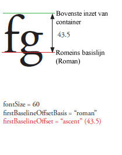
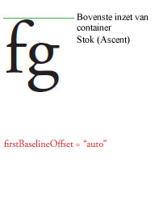
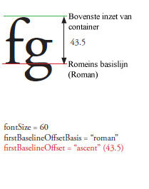
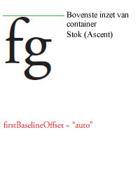
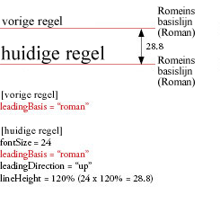
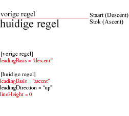
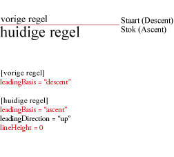
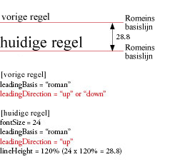
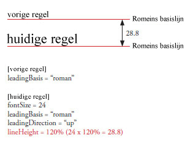
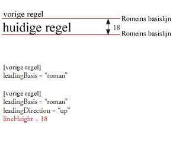

| Pakket | flashx.textLayout.container |
| Klasse | public class ContainerController |
| Overerving | ContainerController |
| Implementatie | IInteractionEventHandler, ITextLayoutFormat, ISandboxSupport |
| Taalversie: | ActionScript 3.0 |
| Runtimeversies: | Flash Player 10, AIR 1.5 |

Verwante API-elementen
flashx.textLayout.elements.TextFlow
flash.text.engine.TextLine
 Overerfde openbare eigenschappen verbergen
Overerfde openbare eigenschappen verbergen Overerfde openbare eigenschappen weergeven
Overerfde openbare eigenschappen weergeven| Eigenschap | Gedefinieerd door | ||
|---|---|---|---|
| absoluteStart : int [alleen-lezen]
Retourneert het eerste teken in de container. | ContainerController | ||
| alignmentBaseline : *
TextLayoutFormat: geeft de basislijn weer, waaraan de dominante basislijn wordt uitgelijnd. | ContainerController | ||
| backgroundAlpha : *
TextLayoutFormat: de alfawaarde (transparantie) van de achtergrond (de standaardwaarde wordt overgenomen als de waarde niet is gedefinieerd tijdens de trapsgewijze opmaak). | ContainerController | ||
| backgroundColor : *
TextLayoutFormat: de achtergrondkleur (de standaardwaarde wordt overgenomen als de waarde niet is gedefinieerd tijdens de trapsgewijze opmaak). | ContainerController | ||
| baselineShift : *
TextLayoutFormat: hoeveelheid dat de basislijn vanaf de dominantBaseline-waarde wordt verschoven. | ContainerController | ||
| blockProgression : *
TextLayoutFormat: geeft een verticale of horizontale voortgang van lijnplaatsing aan. | ContainerController | ||
| breakOpportunity : *
TextLayoutFormat: besturingselementen waarin lijnen onderbroken mogen worden, wanneer tekstomloop in meerdere lijnen wordt opgebroken. | ContainerController | ||
| cffHinting : *
TextLayoutFormat: het type CFF-hinting dat wordt gebruikt voor deze tekst. | ContainerController | ||
| clearFloats : *
TextLayoutFormat: bepaalt hoe tekst om een float loopt. | ContainerController | ||
| color : *
TextLayoutFormat: kleur van de tekst. | ContainerController | ||
| columnCount : *
TextLayoutFormat: het aantal tekstkolommen (neemt de standaardwaarde over als deze tijdens de trapsgewijze opmaak niet is gedefinieerd). | ContainerController | ||
| columnGap : *
TextLayoutFormat: geeft de waarde van de tussenruimte tussen de kolommen in pixels op (neemt de standaardwaarde over als deze tijdens de trapsgewijze opmaak niet gedefinieerd is). | ContainerController | ||
| columnState : ColumnState [alleen-lezen]
Retourneert een ColumnState-object waarmee het aantal kolommen en de kenmerken van de kolommen in de container worden beschreven. | ContainerController | ||
| columnWidth : *
TextLayoutFormat: kolombreedte in pixels (neemt de standaardwaarde over als deze tijdens de trapsgewijze opmaak niet gedefinieerd is). | ContainerController | ||
| compositionHeight : Number [alleen-lezen]
Retourneert de toegestane verticale inhoud voor tekst binnen de container. | ContainerController | ||
| compositionWidth : Number [alleen-lezen]
Retourneert de toegestane horizontale inhoud voor tekst binnen de container. | ContainerController | ||
| computedFormat : flashx.textLayout.formats:ITextLayoutFormat [alleen-lezen]
Retourneert een ITextLayoutFormat-instantie met de kenmerken die worden toegepast op deze container, inclusief de kenmerken die zijn overgenomen van het basiselement van de container. | ContainerController | ||
 | constructor : Object
Verwijzing naar het klasseobject of de constructorfunctie van een bepaalde objectinstantie. | Object | |
| container : Sprite [alleen-lezen]
Retourneert het weergaveobject van de container waarin de tekstregels voor deze ContainerController-instantie zijn opgenomen. | ContainerController | ||
| containerControllerInitialFormat : flashx.textLayout.formats:ITextLayoutFormat [statisch] | ContainerController | ||
| coreStyles : Object [alleen-lezen] Retourneert de coreStyles voor deze ContainerController. | ContainerController | ||
| digitCase : *
TextLayoutFormat: het cijfertype dat wordt gebruikt voor deze tekst. | ContainerController | ||
| digitWidth : *
TextLayoutFormat: het type cijferbreedte dat wordt gebruikt voor deze tekst. | ContainerController | ||
| direction : *
TextLayoutFormat: geeft het standaardinsluitingsniveau in twee richtingen van de tekst in het tekstblok aan. | ContainerController | ||
| dominantBaseline : *
TextLayoutFormat: geeft aan welke elementbasislijn vastgezet is op de alignmentBaseline om de verticale positie van het element op de lijn te bepalen. | ContainerController | ||
| firstBaselineOffset : *
TextLayoutFormat: geeft de basislijnpositie van de eerste regel in de container aan. | ContainerController | ||
| flowComposer : IFlowComposer [alleen-lezen]
Retourneert het flowcomposerobject waarmee de tekst in de container die wordt beheerd door deze controller wordt samengesteld en gemarkeerd. | ContainerController | ||
| fontFamily : *
TextLayoutFormat: de naam van het te gebruiken lettertype of een door komma's gescheiden lijst met namen van lettertypen. | ContainerController | ||
| fontLookup : *
TextLayoutFormat: het gevonden lettertype wordt gebruikt. | ContainerController | ||
| fontSize : *
TextLayoutFormat: de tekstgrootte in pixels. | ContainerController | ||
| fontStyle : *
TextLayoutFormat: tekststijl. | ContainerController | ||
| fontWeight : *
TextLayoutFormat: tekstdikte. | ContainerController | ||
| format : flashx.textLayout.formats:ITextLayoutFormat
Slaat het ITextLayoutFormat-object met de kenmerken van deze container op. | ContainerController | ||
| horizontalScrollPolicy : String
Geeft het horizontale schuifbeleid aan, dat u kunt instellen door een van de constanten van de ScrollPolicy-klasse toe te wijzen: ON, OFF of AUTO. | ContainerController | ||
| horizontalScrollPosition : Number Geeft de huidige horizontale schuiflocatie aan op het werkgebied. | ContainerController | ||
| interactionManager : ISelectionManager [alleen-lezen]
De InteractionManager die is gekoppeld aan dit TextFlow-object. | ContainerController | ||
| justificationRule : *
TextLayoutFormat: regel die gebruikt wordt om tekst in een alinea uit te vullen. | ContainerController | ||
| justificationStyle : *
TextLayoutFormat: de stijl die gebruikt wordt voor de uitvulling van de alinea. | ContainerController | ||
| kerning : *
TextLayoutFormat: met tekenspatiëring worden de pixels tussen bepaalde tekenparen aangepast om de leesbaarheid te verbeteren. | ContainerController | ||
| leadingModel : *
TextLayoutFormat: geeft het regelafstandmodel aan; dit is een combinatie van de regelafstandbasis en de regelafstandrichting. | ContainerController | ||
| ligatureLevel : *
TextLayoutFormat: bepaalt welke ligaturen die in het lettertype gedefinieerd zijn, in de tekst gebruikt kunnen worden. | ContainerController | ||
| lineBreak : *
TextLayoutFormat: bepaalt de tekstomloop binnen de container (neemt de standaardwaarde over, als deze niet is gedefinieerd tijdens de trapsgewijze opmaak). | ContainerController | ||
| lineHeight : *
TextLayoutFormat: besturingselementen voor de regelafstand in de tekst. | ContainerController | ||
| lineThrough : *
TextLayoutFormat: indien true, wordt doorhalen toegepast door een lijn door het midden van de tekst te trekken. | ContainerController | ||
| linkActiveFormat : *
TextLayoutFormat: definieert de opmaakkenmerken die worden gebruikt voor koppelingen met normale status. | ContainerController | ||
| linkHoverFormat : *
TextLayoutFormat: bepaalt de opmaakkenmerken die worden gebruikt voor koppelingen in aanwijstoestand, wanneer de muis zich binnen de begrenzingen (schuivend over) van een koppeling bevindt. | ContainerController | ||
| linkNormalFormat : *
TextLayoutFormat: definieert de opmaakkenmerken die worden gebruikt voor koppelingen met normale status. | ContainerController | ||
| listAutoPadding : *
TextLayoutFormat: geeft een automatische inspringing voor de beginrand van lijsten aan wanneer de opvulwaarde van de lijst voor die zijde auto is. | ContainerController | ||
| listMarkerFormat : *
TextLayoutFormat: definieert de opmaakkenmerken voor lijstmarkeringen. | ContainerController | ||
| listStylePosition : *
TextLayoutFormat: geldige waarden zijn ListStylePosition.INSIDE, ListStylePosition.OUTSIDE, FormatValue.INHERIT. Standaardwaarde is ongedefinieerd, wat aangeeft dat dit niet is ingesteld. Als de waarde niet is gedefinieerd tijdens de trapsgewijze opmaak, neemt deze eigenschap de waarde van een voorouder over. | ContainerController | ||
| listStyleType : *
TextLayoutFormat: geldige waarden zijn ListStyleType.UPPER_ALPHA, ListStyleType.LOWER_ALPHA, ListStyleType.UPPER_ROMAN, ListStyleType.LOWER_ROMAN, ListStyleType.NONE, ListStyleType.DISC, ListStyleType.CIRCLE, ListStyleType.SQUARE, ListStyleType.BOX, ListStyleType.CHECK, ListStyleType.DIAMOND, ListStyleType.HYPHEN, ListStyleType.ARABIC_INDIC, ListStyleType.BENGALI, ListStyleType.DECIMAL, ListStyleType.DECIMAL_LEADING_ZERO, ListStyleType.DEVANAGARI, ListStyleType.GUJARATI, ListStyleType.GURMUKHI, ListStyleType.KANNADA, ListStyleType.PERSIAN, ListStyleType.THAI, ListStyleType.URDU, ListStyleType.CJK_EARTHLY_BRANCH, ListStyleType.CJK_HEAVENLY_STEM, ListStyleType.HANGUL, ListStyleType.HANGUL_CONSTANT, ListStyleType.HIRAGANA, ListStyleType.HIRAGANA_IROHA, ListStyleType.KATAKANA, ListStyleType.KATAKANA_IROHA, ListStyleType.LOWER_ALPHA, ListStyleType.LOWER_GREEK, ListStyleType.LOWER_LATIN, ListStyleType.UPPER_ALPHA, ListStyleType.UPPER_GREEK, ListStyleType.UPPER_LATIN, FormatValue.INHERIT. Standaardwaarde is ongedefinieerd, wat aangeeft dat dit niet is ingesteld. Als de waarde niet is gedefinieerd tijdens de trapsgewijze opmaak, neemt deze eigenschap de waarde van een voorouder over. | ContainerController | ||
| locale : *
TextLayoutFormat: de landinstelling van de tekst. | ContainerController | ||
| paddingBottom : *
TextLayoutFormat: onderste inzet in pixels. | ContainerController | ||
| paddingLeft : *
TextLayoutFormat: linkerinzet in pixels. | ContainerController | ||
| paddingRight : *
TextLayoutFormat: rechterinzet in pixels. | ContainerController | ||
| paddingTop : *
TextLayoutFormat: bovenste inzet in pixels. | ContainerController | ||
| paragraphEndIndent : *
TextLayoutFormat: een Getal dat, in pixels, opgeeft hoeveel er aan de eindrand van de alinea moet worden ingesprongen. | ContainerController | ||
| paragraphSpaceAfter : *
TextLayoutFormat: een getal dat aangeeft hoeveel ruimte in pixels er na een alinea overblijft. | ContainerController | ||
| paragraphSpaceBefore : *
TextLayoutFormat: een getal dat aangeeft hoeveel ruimte in pixels er vóór een alinea is. | ContainerController | ||
| paragraphStartIndent : *
TextLayoutFormat: een Getal dat, in pixels, opgeeft hoeveel er aan de beginrand van de alinea moet worden ingesprongen. | ContainerController | ||
| renderingMode : *
TextLayoutFormat: de renderingmodus voor deze tekst. | ContainerController | ||
| rootElement : ContainerFormattedElement [alleen-lezen]
Retourneert het basiselement dat wordt weergegeven in de container. | ContainerController | ||
| styleName : *
TextLayoutFormat: wijst een identificatieklasse toe aan het element zodat het mogelijk wordt een stijl voor het element in te stellen door te verwijzen naar de styleName. | ContainerController | ||
| styles : Object [alleen-lezen] Retourneert de stijlen voor deze ContainerController. | ContainerController | ||
| tabStops : *
TextLayoutFormat: geeft de tabstops aan die gerelateerd zijn aan de alinea. | ContainerController | ||
| textAlign : *
TextLayoutFormat: de uitlijning van lijnen in de alinea ten opzichte van de container. | ContainerController | ||
| textAlignLast : *
TextLayoutFormat: de uitlijning van de laatste (of enige) lijn in de alinea ten opzichte van de container in de uitgevulde tekst. | ContainerController | ||
| textAlpha : *
TextLayoutFormat: alfawaarde (transparantie) voor de tekst. | ContainerController | ||
| textDecoration : *
TextLayoutFormat: tekstdecoratie. | ContainerController | ||
| textFlow : flashx.textLayout.elements:TextFlow [alleen-lezen]
Retourneert het TextFlow-object waarvan de inhoud wordt weergegeven in de container. | ContainerController | ||
| textIndent : *
TextLayoutFormat: een Getal dat, in pixels, opgeeft hoeveel er bij de eerste regel van de alinea moet worden ingesprongen. | ContainerController | ||
| textJustify : *
TextLayoutFormat: geeft opties op voor het uitvullen van tekst. | ContainerController | ||
| textLength : int [alleen-lezen] Retourneert het totale aantal tekens in de container. | ContainerController | ||
| textRotation : *
TextLayoutFormat: bepaalt het aantal graden waarmee deze tekst geroteerd wordt. | ContainerController | ||
| trackingLeft : *
TextLayoutFormat: getal in pixels (of percentage van fontSize, bijvoorbeeld 120%) dat aangeeft hoeveel 'tracking' (handmatige tekenspatiëring) links van elk teken moet worden toegepast. | ContainerController | ||
| trackingRight : *
TextLayoutFormat: getal in pixels (of percentage van fontSize, bijvoorbeeld 120%) dat aangeeft hoeveel 'tracking' (handmatige tekenspatiëring) rechts van elk teken moet worden toegepast. | ContainerController | ||
| typographicCase : *
TextLayoutFormat: het typografische type dat wordt gebruikt voor deze tekst. | ContainerController | ||
| userStyles : Object Stelt u in staat gebruikersstijlen te lezen en weg te schrijven op een ContainerController-object. | ContainerController | ||
| verticalAlign : *
TextLayoutFormat: verticale uitlijning of uitvulling (neemt de standaardwaarde over als deze tijdens de trapsgewijze opmaak niet gedefinieerd is). | ContainerController | ||
| verticalScrollPolicy : String Geeft het verticale schuifbeleid aan, dat u kunt instellen door een van de constanten van de ScrollPolicy-klasse toe te wijzen: ON, OFF of AUTO. | ContainerController | ||
| verticalScrollPosition : Number Geeft de huidige verticale schuiflocatie aan op het werkgebied. | ContainerController | ||
| whiteSpaceCollapse : *
TextLayoutFormat: vouwt witruimte samen of behoudt deze tijdens het importeren van tekst in een TextFlow. | ContainerController | ||
| wordSpacing : *
TextLayoutFormat: geeft de optimale, minimale en maximale spatiëring (als een vermenigvuldiger van de breedte van een normale spatie) tussen woorden op die moet worden gebruikt tijdens uitvulling. | ContainerController | ||
| Methode | Gedefinieerd door | ||
|---|---|---|---|
ContainerController(container:Sprite, compositionWidth:Number = 100, compositionHeight:Number = 100)
Constructor: maakt een ContainerController-instantie. | ContainerController | ||
Verwerkt de gebeurtenis Event.ACTIVATE als de client gebeurtenissen beheert. | ContainerController | ||
Een schuifgebeurtenis verwerken tijdens een "sleepselectie". | ContainerController | ||
Opgeroepen om clients te vragen om te beginnen met het doorsturen van mouseup- en mousemove-gebeurtenissen van buiten een beveiligingssandbox. | ContainerController | ||
Wist de stijl die is opgegeven in styleProp van dit FlowElement. | ContainerController | ||
Verwerkt de gebeurtenis Event.DEACTIVATE als de client gebeurtenissen beheert. | ContainerController | ||
Verwerkt een bewerkingsgebeurtenis (CUT, COPY, PASTE, SELECT_ALL) wanneer de client gebeurtenissen beheert. | ContainerController | ||
Opgeroepen om clients ervan op de hoogte te brengen, dat het doorsturen van mouseup- en mousemove-gebeurtenissen van buiten een beveiligingssandbox niet meer nodig is. | ContainerController | ||
Verwerkt de gebeurtenissen FocusEvent.KEY_FOCUS_CHANGE en FocusEvent.MOUSE_FOCUS_CHANGE als de client gebeurtenissen beheert. | ContainerController | ||
Verwerkt de gebeurtenis FocusEvent.FOCUS_IN als de client gebeurtenissen beheert. | ContainerController | ||
Verwerkt de gebeurtenis FocusEvent.FOCUS_OUT als de client gebeurtenissen beheert. | ContainerController | ||
Retourneert het gebied dat wordt ingenomen door de tekst, zoals gereflecteerd door de laatste bewerking voor samenstellen of bijwerken. | ContainerController | ||
De schuifafstand bepalen die wordt vereist om het opgegeven aantal regels naar boven of beneden te schuiven. | ContainerController | ||
Retourneert de waarde van de stijl die is opgegeven in de parameter styleProp. | ContainerController | ||
|
Geeft aan of voor een object een opgegeven eigenschap is gedefinieerd. | Object | |
Verwerkt de IMEEvent.IME_START_COMPOSITION-gebeurtenis als de client gebeurtenissen beheert. | ContainerController | ||
Markeert alle tekst in deze container als samen te stellen. | ContainerController | ||
Bepaalt of de container tekst bevat die moet worden samengesteld. | ContainerController | ||
|
Geeft aan of een instantie van de klasse Object zich in de prototypeketen van het object bevindt dat als parameter is opgegeven. | Object | |
Verwerkt de gebeurtenis KeyboardEvent.KEY_DOWN als de client gebeurtenissen beheert. | ContainerController | ||
Verwerkt de FocusEvent.KEY_FOCUS_CHANGE-gebeurtenis als de client gebeurtenissen beheert. | ContainerController | ||
Verwerkt de gebeurtenis KeyboardEvent.KEY_UP als de client gebeurtenissen beheert. | ContainerController | ||
Verwerkt de gebeurtenis ContextMenuEvent.MENU_SELECT als de client gebeurtenissen beheert. | ContainerController | ||
Verwerkt de gebeurtenis MouseEvent.DOUBLE_CLICK als de client gebeurtenissen beheert. | ContainerController | ||
Verwerkt de gebeurtenis MouseEvent.MOUSE_DOWN als de client gebeurtenissen beheert. | ContainerController | ||
Verwerkt de gebeurtenis MouseEvent.MOUSE_MOVE als de client gebeurtenissen beheert. | ContainerController | ||
Clientoproep om een mouseMove-gebeurtenis van buiten een beveiligingssandbox door te sturen. | ContainerController | ||
Verwerkt de gebeurtenis MouseEvent.MOUSE_OUT als de client gebeurtenissen beheert. | ContainerController | ||
Verwerkt de gebeurtenis MouseEvent.MOUSE_OVER als de client gebeurtenissen beheert. | ContainerController | ||
Verwerkt de gebeurtenis MouseEvent.MOUSE_UP als de client gebeurtenissen beheert. | ContainerController | ||
Clientoproep om een mouseUp-gebeurtenis van buiten een beveiligingssandbox door te sturen. | ContainerController | ||
Verwerkt de gebeurtenis MouseEvent.MOUSE_WHEEL als de client gebeurtenissen beheert. | ContainerController | ||
|
Geeft aan of de opgegeven eigenschap bestaat en kan worden opgesomd. | Object | |
Schuift zodat het tekstbereik in de container zichtbaar is. | ContainerController | ||
Hiermee wordt het bereik van de geselecteerde tekst ingesteld in een component dat ITextSupport implementeert. | ContainerController | ||
Stelt de toegestane breedte en hoogte in van tekst in de container. | ContainerController | ||
|
Stelt de beschikbaarheid van een dynamische eigenschap voor lusbewerkingen in. | Object | |
Stelt de waarde van de stijl die is opgegeven in de parameter styleProp, in op de waarde die is opgegeven in de parameter newValue. | ContainerController | ||
Verwerkt de SoftKeyboardEvent.SOFT_KEYBOARD_ACTIVATING-gebeurtenis wanneer de client gebeurtenissen beheert. | ContainerController | ||
Verwerkt de gebeurtenis TextEvent.TEXT_INPUT als de client gebeurtenissen beheert. | ContainerController | ||
|
Geeft de tekenreeksweergave van dit object weer, geformatteerd volgens de locatiespecifieke conventies. | Object | |
|
Retourneert een tekenreeksrepresentatie van het opgegeven object. | Object | |
|
Retourneert de primitieve waarde van het opgegeven object. | Object | |
| Methode | Gedefinieerd door | ||
|---|---|---|---|
Voegt een flash.display.Shape-object toe waarop achtergrondvormen (zoals een achtergrondkleur) worden getekend. | ContainerController | ||
addInlineGraphicElement(parent:DisplayObjectContainer, inlineGraphicElement:DisplayObject, index:int):void
Voegt een flash.display.DisplayObject-object toe als een onderliggend element. | ContainerController | ||
Voegt een flash.display.DisplayObjectContainer-object toe waaraan selectievormen (zoals blokselectiemarkering, cursor enzovoort) worden toegevoegd. | ContainerController | ||
Voegt een flash.text.engine.TextLine-object toe als een onderliggend element van container. | ContainerController | ||
Maakt een contextmenu voor de ContainerController. | ContainerController | ||
Haalt de index op, waarvan de eerste tekstregel in het bovenliggende element moet verschijnen. | ContainerController | ||
Verwijdert een flash.display.Shape-object waarop achtergrondvormen (zoals een achtergrondkleur) worden getekend. | ContainerController | ||
Verwijdert een flash.display.DisplayObject-object uit het bovenliggende element. | ContainerController | ||
Verwijdert het flash.display.DisplayObjectContainer-object dat selectievormen (zoals blokselectiemarkering, cursor enzovoort) bevat. | ContainerController | ||
Verwijdert een flash.text.engine.TextLine-object van het bovenliggende element. | ContainerController | ||
Stelt de schuifrechthoek tijdens het schuiven in op de containerrechthoek, zodat regels die niet geheel worden weergegeven worden bijgesneden naar het schuifbare gedeelte. | ContainerController | ||
_mouseWheelListenerAttached | eigenschap |
tlf_internal var _mouseWheelListenerAttached:Boolean = falseabsoluteStart | eigenschap |
absoluteStart:int [alleen-lezen] | Taalversie: | ActionScript 3.0 |
| Runtimeversies: | Flash Player 10, AIR 1.5 |
Retourneert het eerste teken in de container. Als dit niet de eerste container in de tekstflow is, wordt deze waarde bijgewerkt wanneer de tekst wordt samengesteld. Dat is op het moment dat de methoden compose() of updateAllControllers() van de IFlowComposer worden aangeroepen.
Implementatie
public function get absoluteStart():intVerwante API-elementen
alignmentBaseline | eigenschap |
alignmentBaseline:*| Taalversie: | ActionScript 3.0 |
| Runtimeversies: | Flash Player 10, AIR 1.5 |
TextLayoutFormat: geeft de basislijn weer, waaraan de dominante basislijn wordt uitgelijnd. Als u bijvoorbeeld dominantBaseline op ASCENT instelt, zal alignmentBaseline ingesteld op DESCENT de bovenkant van de tekst uitlijnen met de DESCENT-basislijn, of onder de lijn. De basislijn wordt over het algemeen bepaald door het grootste element in de regel.

Geldige waarden zijn TextBaseline.ROMAN, TextBaseline.ASCENT, TextBaseline.DESCENT, TextBaseline.IDEOGRAPHIC_TOP, TextBaseline.IDEOGRAPHIC_CENTER, TextBaseline.IDEOGRAPHIC_BOTTOM, TextBaseline.USE_DOMINANT_BASELINE, FormatValue.INHERIT.
Standaardwaarde is ongedefinieerd, wat aangeeft dat dit niet is ingesteld.
Als de waarde niet is gedefinieerd tijdens de trapsgewijze opmaak, neemt deze eigenschap de waarde van een voorouder over. Als er voor deze eigenschap geen voorouder is ingesteld, heeft deze de waarde TextBaseline.USE_DOMINANT_BASELINE.
Implementatie
public function get alignmentBaseline():* public function set alignmentBaseline(value:any):voidGegenereerde uitzondering
RangeError — wanneer de ingestelde waarde zich niet binnen het bereik van deze eigenschap bevindt.
|
Verwante API-elementen
backgroundAlpha | eigenschap |
backgroundAlpha:*| Taalversie: | ActionScript 3.0 |
| Runtimeversies: | Flash Player 10, AIR 1.5 |
TextLayoutFormat: de alfawaarde (transparantie) van de achtergrond (de standaardwaarde wordt overgenomen als de waarde niet is gedefinieerd tijdens de trapsgewijze opmaak). Bij de waarde 0 is de kleur volledig transparant. Bij de waarde 1 is de kleur volledig ondoorzichtig. Weergaveobjecten met alpha ingesteld op 0 zijn actief, ook al zijn ze onzichtbaar.
Geldige waarden zijn getallen tussen 0 en 1 en FormatValue.INHERIT.
Standaardwaarde is ongedefinieerd, wat aangeeft dat dit niet is ingesteld.
Als deze eigenschap niet tijdens de trapsgewijze opmaak gedefinieerd is, heeft deze de waarde 1.
Implementatie
public function get backgroundAlpha():* public function set backgroundAlpha(value:any):voidGegenereerde uitzondering
RangeError — wanneer de ingestelde waarde zich niet binnen het bereik van deze eigenschap bevindt.
|
backgroundColor | eigenschap |
backgroundColor:*| Taalversie: | ActionScript 3.0 |
| Runtimeversies: | Flash Player 10, AIR 1.5 |
TextLayoutFormat: de achtergrondkleur (de standaardwaarde wordt overgenomen als de waarde niet is gedefinieerd tijdens de trapsgewijze opmaak). Dit kan ofwel de constante waarde BackgroundColor.TRANSPARENT zijn of een hexadecimale waarde waarmee de drie 8-bits waarden voor RGB (rood, groen, blauw) worden opgegeven. Zo staat 0xFF0000 voor de kleur rood en 0x00FF00 voor groen.
Geldige tekenreekswaarden zijn BackgroundColor.TRANSPARENT, FormatValue.INHERIT en units van 0x0 tot 0xffffffff.
Standaardwaarde is ongedefinieerd, wat aangeeft dat dit niet is ingesteld.
Als deze eigenschap niet tijdens de trapsgewijze opmaak gedefinieerd is, heeft deze de waarde BackgroundColor.TRANSPARENT.
Implementatie
public function get backgroundColor():* public function set backgroundColor(value:any):voidGegenereerde uitzondering
RangeError — wanneer de ingestelde waarde zich niet binnen het bereik van deze eigenschap bevindt.
|
Verwante API-elementen
baselineShift | eigenschap |
baselineShift:*| Taalversie: | ActionScript 3.0 |
| Runtimeversies: | Flash Player 10, AIR 1.5 |
TextLayoutFormat: hoeveelheid dat de basislijn vanaf de dominantBaseline-waarde wordt verschoven. Eenheden zijn pixels of een percentage van fontSize (hierbij moet u een tekenreekswaarde zoals 140% invoeren). Bij positieve waarden wordt de regel naar boven verplaatst voor horizontale tekst (naar rechts voor verticale tekst). Bij negatieve waarden wordt de regel naar beneden verplaatst voor horizontale tekst (naar links voor verticale tekst).
Geldige waarden zijn BaselineShift.SUPERSCRIPT, BaselineShift.SUBSCRIPT, FormatValue.INHERIT.
Geldige getalwaarden zijn getallen tussen -1000 tot 1000.
Geldige percentagewaarden als getallen tussen -1000 en 1000.
Standaardwaarde is ongedefinieerd, wat aangeeft dat dit niet is ingesteld.
Als de waarde niet is gedefinieerd tijdens de trapsgewijze opmaak, neemt deze eigenschap de waarde van een voorouder over. Als er voor deze eigenschap geen voorouder is ingesteld, heeft deze de waarde 0,0.
Implementatie
public function get baselineShift():* public function set baselineShift(value:any):voidGegenereerde uitzondering
RangeError — wanneer de ingestelde waarde zich niet binnen het bereik van deze eigenschap bevindt.
|
Verwante API-elementen
blockProgression | eigenschap |
blockProgression:*| Taalversie: | ActionScript 3.0 |
| Runtimeversies: | Flash Player 10, AIR 1.5 |
TextLayoutFormat: geeft een verticale of horizontale voortgang van lijnplaatsing aan. De regels worden van boven naar beneden geplaatst (BlockProgression.TB bij horizontale tekst) en van rechts naar links (BlockProgression.RL bij verticale tekst).
Geldige waarden zijn BlockProgression.RL, BlockProgression.TB, FormatValue.INHERIT.
Standaardwaarde is ongedefinieerd, wat aangeeft dat dit niet is ingesteld.
Als de waarde niet is gedefinieerd tijdens de trapsgewijze opmaak, neemt deze eigenschap de waarde van een voorouder over. Als er voor deze eigenschap geen voorouder is ingesteld, heeft deze de waarde BlockProgression.TB.
Implementatie
public function get blockProgression():* public function set blockProgression(value:any):voidGegenereerde uitzondering
RangeError — wanneer de ingestelde waarde zich niet binnen het bereik van deze eigenschap bevindt.
|
Verwante API-elementen
breakOpportunity | eigenschap |
breakOpportunity:*| Taalversie: | ActionScript 3.0 |
| Runtimeversies: | Flash Player 10, AIR 1.5 |
TextLayoutFormat: besturingselementen waarin lijnen onderbroken mogen worden, wanneer tekstomloop in meerdere lijnen wordt opgebroken. Stel in op BreakOpportunity.AUTO om tekst normaal te onderbreken. Stel in op BreakOpportunity.NONE om de tekst niet te onderbreken, behalve wanneer de tekst de grens zou overschrijden en er geen andere plaatsen zijn om de lijn te onderbreken. Stel in op BreakOpportunity.ANY om toe te staan, dat de lijn op elke plek mag worden onderbroken, in plaats van alleen tussen woorden. Stel in op BreakOpportunity.ALL, zodat elke typografische cluster op een aparte lijn wordt gezet (handig bij tekst in een pad).
Geldige waarden zijn BreakOpportunity.ALL, BreakOpportunity.ANY, BreakOpportunity.AUTO, BreakOpportunity.NONE, FormatValue.INHERIT.
Standaardwaarde is ongedefinieerd, wat aangeeft dat dit niet is ingesteld.
Als de waarde niet is gedefinieerd tijdens de trapsgewijze opmaak, neemt deze eigenschap de waarde van een voorouder over. Als er voor deze eigenschap geen voorouder is ingesteld, heeft deze de waarde BreakOpportunity.AUTO.
Implementatie
public function get breakOpportunity():* public function set breakOpportunity(value:any):voidGegenereerde uitzondering
RangeError — wanneer de ingestelde waarde zich niet binnen het bereik van deze eigenschap bevindt.
|
Verwante API-elementen
cffHinting | eigenschap |
cffHinting:*| Taalversie: | ActionScript 3.0 |
| Runtimeversies: | Flash Player 10, AIR 1.5 |
TextLayoutFormat: het type CFF-hinting dat wordt gebruikt voor deze tekst. Met CFF-hints bepaalt u of sterke horizontale stammen (stems) in de Flash-runtime al dan niet worden geforceerd om op een subpixelraster te passen. Deze eigenschap is alleen van toepassing als de eigenschap renderingMode is ingesteld op RenderingMode.CFF en als het lettertype is ingesloten (de eigenschap fontLookup is ingesteld op FontLookup.EMBEDDED_CFF). Bij kleine schermen levert hinting heldere, leesbare tekst voor menselijke lezers op.
Geldige waarden zijn CFFHinting.NONE, CFFHinting.HORIZONTAL_STEM, FormatValue.INHERIT.
Standaardwaarde is ongedefinieerd, wat aangeeft dat dit niet is ingesteld.
Als de waarde niet is gedefinieerd tijdens de trapsgewijze opmaak, neemt deze eigenschap de waarde van een voorouder over. Als er voor deze eigenschap geen voorouder is ingesteld, heeft deze de waarde CFFHinting.HORIZONTAL_STEM.
Implementatie
public function get cffHinting():* public function set cffHinting(value:any):voidGegenereerde uitzondering
RangeError — wanneer de ingestelde waarde zich niet binnen het bereik van deze eigenschap bevindt.
|
Verwante API-elementen
clearFloats | eigenschap |
clearFloats:*| Taalversie: | ActionScript 3.0 |
| Runtimeversies: | Flash Player 10, AIR 1.5 |
TextLayoutFormat: bepaalt hoe tekst om een float loopt. Bij een waarde van none loopt de tekst zo dicht mogelijk om een float. Bij een waarde van left slaat de tekst elk gedeelte van de container met een linkerfloat over. Bij een waarde van right slaat de tekst elk gedeelte van de container met een rechterfloat over. Bij een waarde van both slaat de tekst alle floats over.
Geldige waarden zijn ClearFloats.START, ClearFloats.END, ClearFloats.LEFT, ClearFloats.RIGHT, ClearFloats.BOTH, ClearFloats.NONE, FormatValue.INHERIT.
Standaardwaarde is ongedefinieerd, wat aangeeft dat dit niet is ingesteld.
Als deze eigenschap niet tijdens de trapsgewijze opmaak gedefinieerd is, heeft deze de waarde ClearFloats.NONE.
Implementatie
public function get clearFloats():* public function set clearFloats(value:any):voidGegenereerde uitzondering
RangeError — wanneer de ingestelde waarde zich niet binnen het bereik van deze eigenschap bevindt.
|
Verwante API-elementen
color | eigenschap |
color:*| Taalversie: | ActionScript 3.0 |
| Runtimeversies: | Flash Player 10, AIR 1.5 |
TextLayoutFormat: kleur van de tekst. Een hexadecimale waarde waarmee de drie 8-bits waarden voor RGB (rood, groen, blauw) worden opgegeven. Zo staat 0xFF0000 voor de kleur rood en 0x00FF00 voor groen.
Standaardwaarde is ongedefinieerd, wat aangeeft dat dit niet is ingesteld.
Als de waarde niet is gedefinieerd tijdens de trapsgewijze opmaak, neemt deze eigenschap de waarde van een voorouder over. Als er voor deze eigenschap geen voorouder is ingesteld, heeft deze de waarde 0.
Implementatie
public function get color():* public function set color(value:any):voidGegenereerde uitzondering
RangeError — wanneer de ingestelde waarde zich niet binnen het bereik van deze eigenschap bevindt.
|
columnCount | eigenschap |
columnCount:*| Taalversie: | ActionScript 3.0 |
| Runtimeversies: | Flash Player 10, AIR 1.5 |
TextLayoutFormat: het aantal tekstkolommen (neemt de standaardwaarde over als deze tijdens de trapsgewijze opmaak niet is gedefinieerd). De waarde voor het aantal tekstkolommen overschrijft alle andere kolominstellingen. De waarde is een geheel getal of FormatValue.AUTO (indien niet opgegeven). Als columnCount niet is opgegeven, wordt columnWidth gebruikt om zoveel mogelijk kolommen te maken die in de container passen.
Geldige tekenreekswaarden zijn FormatValue.AUTO, FormatValue.INHERIT en ints van 1 tot 50.
Standaardwaarde is ongedefinieerd, wat aangeeft dat dit niet is ingesteld.
Als deze eigenschap niet tijdens de trapsgewijze opmaak gedefinieerd is, heeft deze de waarde FormatValue.AUTO.
Implementatie
public function get columnCount():* public function set columnCount(value:any):voidGegenereerde uitzondering
RangeError — wanneer de ingestelde waarde zich niet binnen het bereik van deze eigenschap bevindt.
|
Verwante API-elementen
columnGap | eigenschap |
columnGap:*| Taalversie: | ActionScript 3.0 |
| Runtimeversies: | Flash Player 10, AIR 1.5 |
TextLayoutFormat: geeft de waarde van de tussenruimte tussen de kolommen in pixels op (neemt de standaardwaarde over als deze tijdens de trapsgewijze opmaak niet gedefinieerd is). De waarde is een getal.
Geldige waarden zijn getallen tussen 0 en 1000 en FormatValue.INHERIT.
Standaardwaarde is ongedefinieerd, wat aangeeft dat dit niet is ingesteld.
Als deze eigenschap niet tijdens de trapsgewijze opmaak gedefinieerd is, heeft deze de waarde 20.
Implementatie
public function get columnGap():* public function set columnGap(value:any):voidGegenereerde uitzondering
RangeError — wanneer de ingestelde waarde zich niet binnen het bereik van deze eigenschap bevindt.
|
columnState | eigenschap |
columnState:ColumnState [alleen-lezen] | Taalversie: | ActionScript 3.0 |
| Runtimeversies: | Flash Player 10, AIR 1.5 |
Retourneert een ColumnState-object waarmee het aantal kolommen en de kenmerken van de kolommen in de container worden beschreven. Deze waarden worden bijgewerkt wanneer de tekst opnieuw wordt samengesteld, als resultaat van IFlowComposer.compose() of IFlowComposer.updateAllControllers().
Implementatie
public function get columnState():ColumnStateVerwante API-elementen
columnWidth | eigenschap |
columnWidth:*| Taalversie: | ActionScript 3.0 |
| Runtimeversies: | Flash Player 10, AIR 1.5 |
TextLayoutFormat: kolombreedte in pixels (neemt de standaardwaarde over als deze tijdens de trapsgewijze opmaak niet gedefinieerd is). Als u de kolombreedte opgeeft maar niet het aantal kolommen, maakt TextLayout zoveel mogelijk kolommen met de desbetreffende breedte. Hierbij wordt uitgegaan van de containerbreedte en de columnGap-instellingen. De resterende ruimte wordt na de laatste kolom ingevoegd. De waarde is een getal.
Geldige tekenreekswaarden zijn FormatValue.AUTO, FormatValue.INHERIT en getallen van 0 tot 8000.
Standaardwaarde is ongedefinieerd, wat aangeeft dat dit niet is ingesteld.
Als deze eigenschap niet tijdens de trapsgewijze opmaak gedefinieerd is, heeft deze de waarde FormatValue.AUTO.
Implementatie
public function get columnWidth():* public function set columnWidth(value:any):voidGegenereerde uitzondering
RangeError — wanneer de ingestelde waarde zich niet binnen het bereik van deze eigenschap bevindt.
|
Verwante API-elementen
compositionHeight | eigenschap |
compositionHeight:Number [alleen-lezen] | Taalversie: | ActionScript 3.0 |
| Runtimeversies: | Flash Player 10, AIR 1.5 |
Retourneert de toegestane verticale inhoud voor tekst binnen de container. De waarde wordt opgegeven in pixels.
Implementatie
public function get compositionHeight():NumberVerwante API-elementen
compositionWidth | eigenschap |
compositionWidth:Number [alleen-lezen] | Taalversie: | ActionScript 3.0 |
| Runtimeversies: | Flash Player 10, AIR 1.5 |
Retourneert de toegestane horizontale inhoud voor tekst binnen de container. De waarde wordt opgegeven in pixels.
Implementatie
public function get compositionWidth():NumberVerwante API-elementen
computedFormat | eigenschap |
computedFormat:flashx.textLayout.formats:ITextLayoutFormat [alleen-lezen] | Taalversie: | ActionScript 3.0 |
| Runtimeversies: | Flash Player 10, AIR 1.5 |
Retourneert een ITextLayoutFormat-instantie met de kenmerken die worden toegepast op deze container, inclusief de kenmerken die zijn overgenomen van het basiselement van de container.
Implementatie
public function get computedFormat():flashx.textLayout.formats:ITextLayoutFormatVerwante API-elementen
container | eigenschap |
container:Sprite [alleen-lezen] | Taalversie: | ActionScript 3.0 |
| Runtimeversies: | Flash Player 10, AIR 1.5 |
Retourneert het weergaveobject van de container waarin de tekstregels voor deze ContainerController-instantie zijn opgenomen.
Implementatie
public function get container():SpriteVerwante API-elementen
containerControllerInitialFormat | eigenschap |
containerControllerInitialFormat:flashx.textLayout.formats:ITextLayoutFormatImplementatie
public static function get containerControllerInitialFormat():flashx.textLayout.formats:ITextLayoutFormat public static function set containerControllerInitialFormat(value:flashx.textLayout.formats:ITextLayoutFormat):voidcoreStyles | eigenschap |
coreStyles:Object [alleen-lezen] | Taalversie: | ActionScript 3.0 |
| Runtimeversies: | Flash Player 10, AIR 1.5 |
Retourneert de coreStyles voor deze ContainerController. De getter maakt een kopie van het coreStyles-woordenboek. Het geretourneerde object bevat de opmaken die zijn gedefinieerd door TextLayoutFormat en zijn opgenomen in TextLayoutFormat.description. Het geretourneerde object bestaat uit een array van stijlnaam-waardeparen.
Implementatie
public function get coreStyles():ObjectVerwante API-elementen
digitCase | eigenschap |
digitCase:*| Taalversie: | ActionScript 3.0 |
| Runtimeversies: | Flash Player 10, AIR 1.5 |
TextLayoutFormat: het cijfertype dat wordt gebruikt voor deze tekst. Wanneer de waarde op DigitCase.OLD_STYLE wordt ingesteld, worden de kleine lettervormen benaderd met verschillende Stijgers en Dalers. Op afbeeldingen wordt proportionele spatiëring toegepast. Deze stijl is alleen beschikbaar bij geselecteerde lettertypen, meestal bij een aanvullend lettertype of een expertlettertype. Met de instelling DigitCase.LINING krijgen de lettertypen de hoogte van hoofdletters en een vaste spatiëring voor een goede uitlijning in grafieken.

Geldige waarden zijn DigitCase.DEFAULT, DigitCase.LINING, DigitCase.OLD_STYLE, FormatValue.INHERIT.
Standaardwaarde is ongedefinieerd, wat aangeeft dat dit niet is ingesteld.
Als de waarde niet is gedefinieerd tijdens de trapsgewijze opmaak, neemt deze eigenschap de waarde van een voorouder over. Als er voor deze eigenschap geen voorouder is ingesteld, heeft deze de waarde DigitCase.DEFAULT.
Implementatie
public function get digitCase():* public function set digitCase(value:any):voidGegenereerde uitzondering
RangeError — wanneer de ingestelde waarde zich niet binnen het bereik van deze eigenschap bevindt.
|
Verwante API-elementen
digitWidth | eigenschap |
digitWidth:*| Taalversie: | ActionScript 3.0 |
| Runtimeversies: | Flash Player 10, AIR 1.5 |
TextLayoutFormat: het type cijferbreedte dat wordt gebruikt voor deze tekst. Bij de cijferbreedte DigitWidth.PROPORTIONAL worden individuele getallen het best weergegeven. Het type DigitWidth.TABULAR werkt het best voor getallen in tabellen, grafieken en verticale rijen.

Geldige waarden zijn DigitWidth.DEFAULT, DigitWidth.PROPORTIONAL, DigitWidth.TABULAR, FormatValue.INHERIT.
Standaardwaarde is ongedefinieerd, wat aangeeft dat dit niet is ingesteld.
Als de waarde niet is gedefinieerd tijdens de trapsgewijze opmaak, neemt deze eigenschap de waarde van een voorouder over. Als er voor deze eigenschap geen voorouder is ingesteld, heeft deze de waarde DigitWidth.DEFAULT.
Implementatie
public function get digitWidth():* public function set digitWidth(value:any):voidGegenereerde uitzondering
RangeError — wanneer de ingestelde waarde zich niet binnen het bereik van deze eigenschap bevindt.
|
Verwante API-elementen
direction | eigenschap |
direction:*| Taalversie: | ActionScript 3.0 |
| Runtimeversies: | Flash Player 10, AIR 1.5 |
TextLayoutFormat: geeft het standaardinsluitingsniveau in twee richtingen van de tekst in het tekstblok aan. Bij een leesvolgorde van links naar rechts, zoals in talen die zijn gebaseerd op het Latijnse alfabet of bij een leesvolgorde van rechts naar links, zoals in het Arabisch of Hebreeuws. Deze eigenschap heeft ook invloed op de kolomrichting wanneer de eigenschap wordt toegepast op containerniveau. Kolommen zijn ook van links naar rechts (of van rechts naar links) georiënteerd, net als gewone tekst. Hieronder volgen enkele voorbeelden:

Geldige waarden zijn Direction.LTR, Direction.RTL, FormatValue.INHERIT.
Standaardwaarde is ongedefinieerd, wat aangeeft dat dit niet is ingesteld.
Als de waarde niet is gedefinieerd tijdens de trapsgewijze opmaak, neemt deze eigenschap de waarde van een voorouder over. Als er voor deze eigenschap geen voorouder is ingesteld, heeft deze de waarde Direction.LTR.
Implementatie
public function get direction():* public function set direction(value:any):voidGegenereerde uitzondering
RangeError — wanneer de ingestelde waarde zich niet binnen het bereik van deze eigenschap bevindt.
|
Verwante API-elementen
dominantBaseline | eigenschap |
dominantBaseline:*| Taalversie: | ActionScript 3.0 |
| Runtimeversies: | Flash Player 10, AIR 1.5 |
TextLayoutFormat: geeft aan welke elementbasislijn vastgezet is op de alignmentBaseline om de verticale positie van het element op de lijn te bepalen. Een waarde van TextBaseline.AUTO selecteert de dominante basislijn op basis van de locale-eigenschap van de bovenliggende alinea. Voor Japans en Chinees is de geselecteerde basislijnwaarde TextBaseline.IDEOGRAPHIC_CENTER; voor alle andere talen is deze TextBaseline.ROMAN. Deze basislijnkeuzen worden bepaald door het lettertype en de lettergrootte.
Geldige waarden zijn FormatValue.AUTO, TextBaseline.ROMAN, TextBaseline.ASCENT, TextBaseline.DESCENT, TextBaseline.IDEOGRAPHIC_TOP, TextBaseline.IDEOGRAPHIC_CENTER, TextBaseline.IDEOGRAPHIC_BOTTOM, FormatValue.INHERIT.
Standaardwaarde is ongedefinieerd, wat aangeeft dat dit niet is ingesteld.
Als de waarde niet is gedefinieerd tijdens de trapsgewijze opmaak, neemt deze eigenschap de waarde van een voorouder over. Als er voor deze eigenschap geen voorouder is ingesteld, heeft deze de waarde FormatValue.AUTO.
Implementatie
public function get dominantBaseline():* public function set dominantBaseline(value:any):voidGegenereerde uitzondering
RangeError — wanneer de ingestelde waarde zich niet binnen het bereik van deze eigenschap bevindt.
|
Verwante API-elementen
firstBaselineOffset | eigenschap |
firstBaselineOffset:*| Taalversie: | ActionScript 3.0 |
| Runtimeversies: | Flash Player 10, AIR 1.5 |
TextLayoutFormat: geeft de basislijnpositie van de eerste regel in de container aan. Naar welke basislijn door deze eigenschap wordt verwezen is afhankelijk van de landinstellingswaarde op containerniveau. Voor Japans en Chinees geldt de waarde TextBaseline.IDEOGRAPHIC_BOTTOM; voor alle andere talen is het TextBaseline.ROMAN. De verschuiving van de bovenste inzet (of rechterinzet als blockProgression is ingesteld op RL) van de container naar de basislijn van de eerste regel kan de volgende waarden hebben: BaselineOffset.ASCENT (gelijk aan de stijging van de regel), BaselineOffset.LINE_HEIGHT (gelijk aan de hoogte van de eerste regel) of een vast getal om een absolute afstand aan te duiden. Met de waarde BaselineOffset.AUTO wordt de stijging van de regel uitgelijnd met de bovenste inzet van de container.

 

Geldige tekenreekswaarden zijn BaselineOffset.AUTO, BaselineOffset.ASCENT, BaselineOffset.LINE_HEIGHT, FormatValue.INHERIT en getallen van 0 tot 1000.
Standaardwaarde is ongedefinieerd, wat aangeeft dat dit niet is ingesteld.
Als de waarde niet is gedefinieerd tijdens de trapsgewijze opmaak, neemt deze eigenschap de waarde van een voorouder over. Als er voor deze eigenschap geen voorouder is ingesteld, heeft deze de waarde BaselineOffset.AUTO.
Implementatie
public function get firstBaselineOffset():* public function set firstBaselineOffset(value:any):voidGegenereerde uitzondering
RangeError — wanneer de ingestelde waarde zich niet binnen het bereik van deze eigenschap bevindt.
|
Verwante API-elementen
flowComposer | eigenschap |
flowComposer:IFlowComposer [alleen-lezen] | Taalversie: | ActionScript 3.0 |
| Runtimeversies: | Flash Player 10, AIR 1.5 |
Retourneert het flowcomposerobject waarmee de tekst in de container die wordt beheerd door deze controller wordt samengesteld en gemarkeerd.
Implementatie
public function get flowComposer():IFlowComposerVerwante API-elementen
fontFamily | eigenschap |
fontFamily:*| Taalversie: | ActionScript 3.0 |
| Runtimeversies: | Flash Player 10, AIR 1.5 |
TextLayoutFormat: de naam van het te gebruiken lettertype of een door komma's gescheiden lijst met namen van lettertypen. Het Flash-runtimeprogramma geeft het element weer met het eerste beschikbare lettertype in de lijst. De combinatie Arial, Helvetica, _sans zorgt er bijvoorbeeld voor dat de speler eerst zoekt naar Arial, dan naar Helvetica (als Arial niet is gevonden) en vervolgens naar _sans (als de eerste twee lettertypen niet zijn gevonden).
Standaardwaarde is ongedefinieerd, wat aangeeft dat dit niet is ingesteld.
Als de waarde niet is gedefinieerd tijdens de trapsgewijze opmaak, neemt deze eigenschap de waarde van een voorouder over. Als er voor deze eigenschap geen voorouder is ingesteld, heeft deze de waarde Arial.
Implementatie
public function get fontFamily():* public function set fontFamily(value:any):voidGegenereerde uitzondering
RangeError — wanneer de ingestelde waarde zich niet binnen het bereik van deze eigenschap bevindt.
|
fontLookup | eigenschap |
fontLookup:*| Taalversie: | ActionScript 3.0 |
| Runtimeversies: | Flash Player 10, AIR 1.5 |
TextLayoutFormat: het gevonden lettertype wordt gebruikt. Als u FontLookup.DEVICE opgeeft, worden de lettertypen gebruikt die zijn geïnstalleerd op het systeem waarop het SWF-bestand wordt uitgevoerd. Apparaatlettertypen resulteren in een kleinere bestandsgrootte, maar de tekst wordt niet altijd op dezelfde manier gerenderd op verschillende systemen en platforms. Als u FontLookup.EMBEDDED_CFF opgeeft, worden de lettertypecontouren gebruikt die zijn ingesloten in het gepubliceerde SWF-bestand. Bij ingesloten lettertypen wordt het SWF-bestand (soms dramatisch) groter, maar de tekst wordt wel consistent weergegeven in het geselecteerde lettertype.
Geldige waarden zijn FontLookup.DEVICE, FontLookup.EMBEDDED_CFF, FormatValue.INHERIT.
Standaardwaarde is ongedefinieerd, wat aangeeft dat dit niet is ingesteld.
Als de waarde niet is gedefinieerd tijdens de trapsgewijze opmaak, neemt deze eigenschap de waarde van een voorouder over. Als er voor deze eigenschap geen voorouder is ingesteld, heeft deze de waarde FontLookup.DEVICE.
Implementatie
public function get fontLookup():* public function set fontLookup(value:any):voidGegenereerde uitzondering
RangeError — wanneer de ingestelde waarde zich niet binnen het bereik van deze eigenschap bevindt.
|
Verwante API-elementen
fontSize | eigenschap |
fontSize:*| Taalversie: | ActionScript 3.0 |
| Runtimeversies: | Flash Player 10, AIR 1.5 |
TextLayoutFormat: de tekstgrootte in pixels.
Geldige waarden zijn getallen tussen 1 en 720 en FormatValue.INHERIT.
Standaardwaarde is ongedefinieerd, wat aangeeft dat dit niet is ingesteld.
Als de waarde niet is gedefinieerd tijdens de trapsgewijze opmaak, neemt deze eigenschap de waarde van een voorouder over. Als er voor deze eigenschap geen voorouder is ingesteld, heeft deze de waarde 12.
Implementatie
public function get fontSize():* public function set fontSize(value:any):voidGegenereerde uitzondering
RangeError — wanneer de ingestelde waarde zich niet binnen het bereik van deze eigenschap bevindt.
|
fontStyle | eigenschap |
fontStyle:*| Taalversie: | ActionScript 3.0 |
| Runtimeversies: | Flash Player 10, AIR 1.5 |
TextLayoutFormat: tekststijl. Voor gebruik in onbewerkte tekst kan dit FontPosture.NORMAL zijn of FontPosture.ITALIC voor cursief. Deze eigenschap is alleen van toepassing op apparaatlettertypen (de eigenschap fontLookup is ingesteld op flash.text.engine.FontLookup.DEVICE).
Geldige waarden zijn FontPosture.NORMAL, FontPosture.ITALIC, FormatValue.INHERIT.
Standaardwaarde is ongedefinieerd, wat aangeeft dat dit niet is ingesteld.
Als de waarde niet is gedefinieerd tijdens de trapsgewijze opmaak, neemt deze eigenschap de waarde van een voorouder over. Als er voor deze eigenschap geen voorouder is ingesteld, heeft deze de waarde FontPosture.NORMAL.
Implementatie
public function get fontStyle():* public function set fontStyle(value:any):voidGegenereerde uitzondering
RangeError — wanneer de ingestelde waarde zich niet binnen het bereik van deze eigenschap bevindt.
|
Verwante API-elementen
fontWeight | eigenschap |
fontWeight:*| Taalversie: | ActionScript 3.0 |
| Runtimeversies: | Flash Player 10, AIR 1.5 |
TextLayoutFormat: tekstdikte. Voor gebruik in onbewerkte tekst kan dit FontWeight.NORMAL of FontWeight.BOLD zijn. Alleen van toepassing op apparaatlettertypen (de eigenschap fontLookup is ingesteld op flash.text.engine.FontLookup.DEVICE).
Geldige waarden zijn FontWeight.NORMAL, FontWeight.BOLD, FormatValue.INHERIT.
Standaardwaarde is ongedefinieerd, wat aangeeft dat dit niet is ingesteld.
Als de waarde niet is gedefinieerd tijdens de trapsgewijze opmaak, neemt deze eigenschap de waarde van een voorouder over. Als er voor deze eigenschap geen voorouder is ingesteld, heeft deze de waarde FontWeight.NORMAL.
Implementatie
public function get fontWeight():* public function set fontWeight(value:any):voidGegenereerde uitzondering
RangeError — wanneer de ingestelde waarde zich niet binnen het bereik van deze eigenschap bevindt.
|
Verwante API-elementen
format | eigenschap |
format:flashx.textLayout.formats:ITextLayoutFormat| Taalversie: | ActionScript 3.0 |
| Runtimeversies: | Flash Player 10, AIR 1.5 |
Slaat het ITextLayoutFormat-object met de kenmerken van deze container op. De controller neemt de containereigenschappen over van de TextFlow waar deze deel van uitmaakt. Met deze eigenschap kunnen verschillende controllers in dezelfde tekstflow bijvoorbeeld beschikken over verschillende kolominstellingen of opvullingen.
Implementatie
public function get format():flashx.textLayout.formats:ITextLayoutFormat public function set format(value:flashx.textLayout.formats:ITextLayoutFormat):voidVerwante API-elementen
horizontalScrollPolicy | eigenschap |
horizontalScrollPolicy:String| Taalversie: | ActionScript 3.0 |
| Runtimeversies: | Flash Player 10, AIR 1.5 |
Geeft het horizontale schuifbeleid aan, dat u kunt instellen door een van de constanten van de ScrollPolicy-klasse toe te wijzen: ON, OFF of AUTO.
Implementatie
public function get horizontalScrollPolicy():String public function set horizontalScrollPolicy(value:String):voidVerwante API-elementen
horizontalScrollPosition | eigenschap |
horizontalScrollPosition:Number| Taalversie: | ActionScript 3.0 |
| Runtimeversies: | Flash Player 10, AIR 1.5 |
Geeft de huidige horizontale schuiflocatie aan op het werkgebied. De waarde geeft het aantal pixels vanaf de linkerkant aan.
Implementatie
public function get horizontalScrollPosition():Number public function set horizontalScrollPosition(value:Number):voidinteractionManager | eigenschap |
interactionManager:ISelectionManager [alleen-lezen] | Taalversie: | ActionScript 3.0 |
| Runtimeversies: | Flash Player 10, AIR 1.5 |
De InteractionManager die is gekoppeld aan dit TextFlow-object.
Beheert alle selectie en bewerkingen in de tekst. De interactionManager is null, als de TextFlow niet kan worden geselecteerd. Om de TextFlow te kunnen bewerken, moet u een interactionManager toewijzen die tegelijkertijd een ISelectionManager en een IEditManager is. Om een alleen-lezen-TextFlow te maken die waarin selectie mogelijk is, wijst u een interactionManager toe die alleen een ISelectionManager is.
Implementatie
public function get interactionManager():ISelectionManagerVerwante API-elementen
justificationRule | eigenschap |
justificationRule:*| Taalversie: | ActionScript 3.0 |
| Runtimeversies: | Flash Player 10, AIR 1.5 |
TextLayoutFormat: regel die gebruikt wordt om tekst in een alinea uit te vullen. Standaardwaarde is FormatValue.AUTO, die tekst uitlijnt op basis van de locale-eigenschap van de alinea. Voor alle talen, behalve Japans en Chinees, wordt FormatValue.AUTO JustificationRule.SPACE, dat extra ruimte toevoegt aan de spatietekens. Voor Japans en Chinees wordt FormatValue.AUTO JustficationRule.EAST_ASIAN. Uitvulling wijzigt gedeeltelijk de tussenruimte bij leestekens. In romeinse tekst nemen de komma en Japanse punten de volledige tekenbreedte in beslag, maar in Oost-Aziatische tekst nemen deze slechts een halve tekenbreedte in beslag. In Oost-Aziatische tekst wordt ook de tussenruimte tussen opeenvolgende leestekens kleiner, zodat deze voldoet aan de traditionele Oost-Aziatische typografische conventies. In het onderstaande voorbeeld ziet u de regelafstand die wordt toegepast op de tweede regel van de alinea's. Bij de Oost-Aziatische versies worden de laatste twee regels naar links gedrukt. Bij het romeinse schrift worden de tweede regel en alle volgende regels naar links gedrukt.

Geldige waarden zijn JustificationRule.EAST_ASIAN, JustificationRule.SPACE, FormatValue.AUTO, FormatValue.INHERIT.
Standaardwaarde is ongedefinieerd, wat aangeeft dat dit niet is ingesteld.
Als de waarde niet is gedefinieerd tijdens de trapsgewijze opmaak, neemt deze eigenschap de waarde van een voorouder over. Als er voor deze eigenschap geen voorouder is ingesteld, heeft deze de waarde FormatValue.AUTO.
Implementatie
public function get justificationRule():* public function set justificationRule(value:any):voidGegenereerde uitzondering
RangeError — wanneer de ingestelde waarde zich niet binnen het bereik van deze eigenschap bevindt.
|
Verwante API-elementen
justificationStyle | eigenschap |
justificationStyle:*| Taalversie: | ActionScript 3.0 |
| Runtimeversies: | Flash Player 10, AIR 1.5 |
TextLayoutFormat: de stijl die gebruikt wordt voor de uitvulling van de alinea. Wordt alleen gebruikt als justificationRule is ingesteld op JustificationRule.EAST_ASIAN. De standaardwaarde FormatValue.AUTO wordt omgezet in JustificationStyle.PUSH_IN_KINSOKU voor alle landinstellingen. De constanten die worden gedefinieerd door de JustificationStyle-klasse bieden opties voor de verwerking van Kinsoku-tekens. Dit zijn Japanse tekens die niet aan het begin of einde van een regel mogen staan. Als u de tekst minder compact wilt weergeven, geeft u JustificationStyle.PUSH-OUT-ONLY op. Als u tekst op dezelfde manier wilt weergeven als bij de justificationRule van JustificationRule.SPACE, gebruikt u JustificationStyle.PRIORITIZE-LEAST-ADJUSTMENT.
Geldige waarden zijn JustificationStyle.PRIORITIZE_LEAST_ADJUSTMENT, JustificationStyle.PUSH_IN_KINSOKU, JustificationStyle.PUSH_OUT_ONLY, FormatValue.AUTO, FormatValue.INHERIT.
Standaardwaarde is ongedefinieerd, wat aangeeft dat dit niet is ingesteld.
Als de waarde niet is gedefinieerd tijdens de trapsgewijze opmaak, neemt deze eigenschap de waarde van een voorouder over. Als er voor deze eigenschap geen voorouder is ingesteld, heeft deze de waarde FormatValue.AUTO.
Implementatie
public function get justificationStyle():* public function set justificationStyle(value:any):voidGegenereerde uitzondering
RangeError — wanneer de ingestelde waarde zich niet binnen het bereik van deze eigenschap bevindt.
|
Verwante API-elementen
kerning | eigenschap |
kerning:*| Taalversie: | ActionScript 3.0 |
| Runtimeversies: | Flash Player 10, AIR 1.5 |
TextLayoutFormat: met tekenspatiëring worden de pixels tussen bepaalde tekenparen aangepast om de leesbaarheid te verbeteren. Tekenspatiëring wordt ondersteund voor alle lettertypen met tabellen voor tekenspatiëring.
Geldige waarden zijn Kerning.ON, Kerning.OFF, Kerning.AUTO, FormatValue.INHERIT.
Standaardwaarde is ongedefinieerd, wat aangeeft dat dit niet is ingesteld.
Als de waarde niet is gedefinieerd tijdens de trapsgewijze opmaak, neemt deze eigenschap de waarde van een voorouder over. Als er voor deze eigenschap geen voorouder is ingesteld, heeft deze de waarde Kerning.AUTO.
Implementatie
public function get kerning():* public function set kerning(value:any):voidGegenereerde uitzondering
RangeError — wanneer de ingestelde waarde zich niet binnen het bereik van deze eigenschap bevindt.
|
Verwante API-elementen
leadingModel | eigenschap |
leadingModel:*| Taalversie: | ActionScript 3.0 |
| Runtimeversies: | Flash Player 10, AIR 1.5 |
TextLayoutFormat: geeft het regelafstandmodel aan; dit is een combinatie van de regelafstandbasis en de regelafstandrichting. De basis voor de regelafstand is de basislijn waarnaar de eigenschap lineHeight verwijst. Met de richting bepaalt u of de eigenschap lineHeight verwijst naar de afstand van de basislijn van een regel tot de basislijn van de vorige of volgende regel. De standaardwaarde FormatValue.AUTO wordt omgezet op basis van de locale-eigenschap van de alinea. Voor Japans en Chinees is de waarde LeadingModel.IDEOGRAPHIC_TOP_DOWN. Voor alle andere talen is de waarde LeadingModel.ROMAN_UP.
Regelafstand, basis:
  

Regelafstand, richting:
 

Geldige waarden zijn LeadingModel.ROMAN_UP, LeadingModel.IDEOGRAPHIC_TOP_UP, LeadingModel.IDEOGRAPHIC_CENTER_UP, LeadingModel.IDEOGRAPHIC_TOP_DOWN, LeadingModel.IDEOGRAPHIC_CENTER_DOWN, LeadingModel.APPROXIMATE_TEXT_FIELD, LeadingModel.ASCENT_DESCENT_UP, LeadingModel.BOX, LeadingModel.AUTO, FormatValue.INHERIT.
Standaardwaarde is ongedefinieerd, wat aangeeft dat dit niet is ingesteld.
Als de waarde niet is gedefinieerd tijdens de trapsgewijze opmaak, neemt deze eigenschap de waarde van een voorouder over. Als er voor deze eigenschap geen voorouder is ingesteld, heeft deze de waarde LeadingModel.AUTO.
Implementatie
public function get leadingModel():* public function set leadingModel(value:any):voidGegenereerde uitzondering
RangeError — wanneer de ingestelde waarde zich niet binnen het bereik van deze eigenschap bevindt.
|
Verwante API-elementen
ligatureLevel | eigenschap |
ligatureLevel:*| Taalversie: | ActionScript 3.0 |
| Runtimeversies: | Flash Player 10, AIR 1.5 |
TextLayoutFormat: bepaalt welke ligaturen die in het lettertype gedefinieerd zijn, in de tekst gebruikt kunnen worden. Welke ligaturen voor de verschillende instellingen worden weergegeven is afhankelijk van het lettertype. Een ligatuur ontstaat wanneer twee of meer lettervormen samen één glyph vormen. Ligaturen vervangen normaal gesproken opeenvolgende tekens die gemeenschappelijke componenten hebben, zoals de letterparen 'fi', 'fl' of 'ae'. Deze worden in Latijnse en niet-Latijnse tekensets gebruikt. De ligaturen die door de waarden van de LigatureLevel-klasse ingeschakeld zijn, MINIMUM, COMMON, UNCOMMON en EXOTIC, zijn additief. Elke waarde schakelt een nieuwe set ligaturen in, maar bevat ook die van vorige typen.
Opmerking: wanneer u werkt met Arabische of Oud-Syrische lettertypen, moet ligatureLevel worden ingesteld op MINIMUM of een hogere waarde.

Geldige waarden zijn LigatureLevel.MINIMUM, LigatureLevel.COMMON, LigatureLevel.UNCOMMON, LigatureLevel.EXOTIC, FormatValue.INHERIT.
Standaardwaarde is ongedefinieerd, wat aangeeft dat dit niet is ingesteld.
Als de waarde niet is gedefinieerd tijdens de trapsgewijze opmaak, neemt deze eigenschap de waarde van een voorouder over. Als er voor deze eigenschap geen voorouder is ingesteld, heeft deze de waarde LigatureLevel.COMMON.
Implementatie
public function get ligatureLevel():* public function set ligatureLevel(value:any):voidGegenereerde uitzondering
RangeError — wanneer de ingestelde waarde zich niet binnen het bereik van deze eigenschap bevindt.
|
Verwante API-elementen
lineBreak | eigenschap |
lineBreak:*| Taalversie: | ActionScript 3.0 |
| Runtimeversies: | Flash Player 10, AIR 1.5 |
TextLayoutFormat: bepaalt de tekstomloop binnen de container (neemt de standaardwaarde over, als deze niet is gedefinieerd tijdens de trapsgewijze opmaak). Tekst in de container kan worden ingesteld op de breedte van de container (LineBreak.TO_FIT), maar de tekst kan ook alleen worden afgebroken bij expliciete regelterugloop- of regelinvoertekens (LineBreak.EXPLICIT).
Geldige waarden zijn LineBreak.EXPLICIT, LineBreak.TO_FIT, FormatValue.INHERIT.
Standaardwaarde is ongedefinieerd, wat aangeeft dat dit niet is ingesteld.
Als deze eigenschap niet tijdens de trapsgewijze opmaak gedefinieerd is, heeft deze de waarde LineBreak.TO_FIT.
Implementatie
public function get lineBreak():* public function set lineBreak(value:any):voidGegenereerde uitzondering
RangeError — wanneer de ingestelde waarde zich niet binnen het bereik van deze eigenschap bevindt.
|
Verwante API-elementen
lineHeight | eigenschap |
lineHeight:*| Taalversie: | ActionScript 3.0 |
| Runtimeversies: | Flash Player 10, AIR 1.5 |
TextLayoutFormat: besturingselementen voor de regelafstand in de tekst. De afstand tussen de basislijn van de vorige of volgende regel (op basis van LeadingModel) en de basislijn van de huidige regel is gelijk aan de maximale regelafstand die wordt toegepast op een willekeurig teken in de regel. Dit is een getal of percentage. Als u een percentage wilt opgeven, moet u een tekenreekswaarde opgeven, zoals 140%.

Geldige waarden zijn getallen tussen -720 en 720.
Geldige percentagewaarden als getallen tussen -1000% en 1000%.
Een geldige waarde is onder andere FormatValue.INHERIT.
Standaardwaarde is ongedefinieerd, wat aangeeft dat dit niet is ingesteld.
Als de waarde niet is gedefinieerd tijdens de trapsgewijze opmaak, neemt deze eigenschap de waarde van een voorouder over. Als er voor deze eigenschap geen voorouder is ingesteld, heeft deze de waarde 120%.
Implementatie
public function get lineHeight():* public function set lineHeight(value:any):voidGegenereerde uitzondering
RangeError — wanneer de ingestelde waarde zich niet binnen het bereik van deze eigenschap bevindt.
|
lineThrough | eigenschap |
lineThrough:*| Taalversie: | ActionScript 3.0 |
| Runtimeversies: | Flash Player 10, AIR 1.5 |
TextLayoutFormat: indien true, wordt doorhalen toegepast door een lijn door het midden van de tekst te trekken.
Geldige waarden zijn true, false en FormatValue.INHERIT.
Standaardwaarde is ongedefinieerd, wat aangeeft dat dit niet is ingesteld.
Als de waarde niet is gedefinieerd tijdens de trapsgewijze opmaak, neemt deze eigenschap de waarde van een voorouder over. Als er voor deze eigenschap geen voorouder is ingesteld, heeft deze de waarde false.
Implementatie
public function get lineThrough():* public function set lineThrough(value:any):voidGegenereerde uitzondering
RangeError — wanneer de ingestelde waarde zich niet binnen het bereik van deze eigenschap bevindt.
|
linkActiveFormat | eigenschap |
linkActiveFormat:*| Taalversie: | ActionScript 3.0 |
| Runtimeversies: | Flash Player 10, AIR 1.5 |
TextLayoutFormat: definieert de opmaakkenmerken die worden gebruikt voor koppelingen met normale status. Deze waarde zal omlaag door de hiërarchie worden doorgegeven en worden toegepast op afstammende koppelingen. Accepteert inherit, een ITextLayoutFormat of converteert een array objecten met sleutel en waarde als leden naar een TextLayoutFormat.
Een geldige waarde is onder andere FormatValue.INHERIT.
Standaardwaarde is ongedefinieerd, wat aangeeft dat dit niet is ingesteld.
Als de waarde niet is gedefinieerd tijdens de trapsgewijze opmaak, neemt deze eigenschap de waarde van een voorouder over. Als er voor deze eigenschap geen voorouder is ingesteld, heeft deze de waarde null.
Implementatie
public function get linkActiveFormat():* public function set linkActiveFormat(value:any):voidGegenereerde uitzondering
RangeError — wanneer de ingestelde waarde zich niet binnen het bereik van deze eigenschap bevindt.
|
linkHoverFormat | eigenschap |
linkHoverFormat:*| Taalversie: | ActionScript 3.0 |
| Runtimeversies: | Flash Player 10, AIR 1.5 |
TextLayoutFormat: bepaalt de opmaakkenmerken die worden gebruikt voor koppelingen in aanwijstoestand, wanneer de muis zich binnen de begrenzingen (schuivend over) van een koppeling bevindt. Deze waarde zal omlaag door de hiërarchie worden doorgegeven en worden toegepast op afstammende koppelingen. Accepteert inherit, een ITextLayoutFormat of converteert een array objecten met sleutel en waarde als leden naar een TextLayoutFormat.
Een geldige waarde is onder andere FormatValue.INHERIT.
Standaardwaarde is ongedefinieerd, wat aangeeft dat dit niet is ingesteld.
Als de waarde niet is gedefinieerd tijdens de trapsgewijze opmaak, neemt deze eigenschap de waarde van een voorouder over. Als er voor deze eigenschap geen voorouder is ingesteld, heeft deze de waarde null.
Implementatie
public function get linkHoverFormat():* public function set linkHoverFormat(value:any):voidGegenereerde uitzondering
RangeError — wanneer de ingestelde waarde zich niet binnen het bereik van deze eigenschap bevindt.
|
linkNormalFormat | eigenschap |
linkNormalFormat:*| Taalversie: | ActionScript 3.0 |
| Runtimeversies: | Flash Player 10, AIR 1.5 |
TextLayoutFormat: definieert de opmaakkenmerken die worden gebruikt voor koppelingen met normale status. Deze waarde zal omlaag door de hiërarchie worden doorgegeven en worden toegepast op afstammende koppelingen. Accepteert inherit, een ITextLayoutFormat of converteert een array objecten met sleutel en waarde als leden naar een TextLayoutFormat.
Een geldige waarde is onder andere FormatValue.INHERIT.
Standaardwaarde is ongedefinieerd, wat aangeeft dat dit niet is ingesteld.
Als de waarde niet is gedefinieerd tijdens de trapsgewijze opmaak, neemt deze eigenschap de waarde van een voorouder over. Als er voor deze eigenschap geen voorouder is ingesteld, heeft deze de waarde null.
Implementatie
public function get linkNormalFormat():* public function set linkNormalFormat(value:any):voidGegenereerde uitzondering
RangeError — wanneer de ingestelde waarde zich niet binnen het bereik van deze eigenschap bevindt.
|
listAutoPadding | eigenschap |
listAutoPadding:*| Taalversie: | ActionScript 3.0 |
| Runtimeversies: | Flash Player 10, AIR 1.5 |
TextLayoutFormat: geeft een automatische inspringing voor de beginrand van lijsten aan wanneer de opvulwaarde van de lijst voor die zijde auto is.
Geldige waarden zijn getallen tussen -1000 en 1000 en FormatValue.INHERIT.
Standaardwaarde is ongedefinieerd, wat aangeeft dat dit niet is ingesteld.
Als de waarde niet is gedefinieerd tijdens de trapsgewijze opmaak, neemt deze eigenschap de waarde van een voorouder over. Als er voor deze eigenschap geen voorouder is ingesteld, heeft deze de waarde 40.
Implementatie
public function get listAutoPadding():* public function set listAutoPadding(value:any):voidGegenereerde uitzondering
RangeError — wanneer de ingestelde waarde zich niet binnen het bereik van deze eigenschap bevindt.
|
listMarkerFormat | eigenschap |
listMarkerFormat:*| Taalversie: | ActionScript 3.0 |
| Runtimeversies: | Flash Player 10, AIR 1.5 |
TextLayoutFormat: definieert de opmaakkenmerken voor lijstmarkeringen. Deze waarde zal omlaag door de hiërarchie worden doorgegeven en worden toegepast op afstammende koppelingen. Accepteert inherit, een IListMarkerFormat of converteert een array objecten met sleutel en waarde als leden naar een ListMarkerFormat.
Een geldige waarde is onder andere FormatValue.INHERIT.
Standaardwaarde is ongedefinieerd, wat aangeeft dat dit niet is ingesteld.
Als de waarde niet is gedefinieerd tijdens de trapsgewijze opmaak, neemt deze eigenschap de waarde van een voorouder over. Als er voor deze eigenschap geen voorouder is ingesteld, heeft deze de waarde null.
Implementatie
public function get listMarkerFormat():* public function set listMarkerFormat(value:any):voidGegenereerde uitzondering
RangeError — wanneer de ingestelde waarde zich niet binnen het bereik van deze eigenschap bevindt.
|
listStylePosition | eigenschap |
listStylePosition:*| Taalversie: | ActionScript 3.0 |
| Runtimeversies: | Flash Player 10, AIR 1.5 |
TextLayoutFormat:
Geldige waarden zijn ListStylePosition.INSIDE, ListStylePosition.OUTSIDE, FormatValue.INHERIT.
Standaardwaarde is ongedefinieerd, wat aangeeft dat dit niet is ingesteld.
Als de waarde niet is gedefinieerd tijdens de trapsgewijze opmaak, neemt deze eigenschap de waarde van een voorouder over. Als er voor deze eigenschap geen voorouder is ingesteld, heeft deze de waarde ListStylePosition.OUTSIDE.
Implementatie
public function get listStylePosition():* public function set listStylePosition(value:any):voidGegenereerde uitzondering
RangeError — wanneer de ingestelde waarde zich niet binnen het bereik van deze eigenschap bevindt.
|
Verwante API-elementen
listStyleType | eigenschap |
listStyleType:*| Taalversie: | ActionScript 3.0 |
| Runtimeversies: | Flash Player 10, AIR 1.5 |
TextLayoutFormat:
Geldige waarden zijn ListStyleType.UPPER_ALPHA, ListStyleType.LOWER_ALPHA, ListStyleType.UPPER_ROMAN, ListStyleType.LOWER_ROMAN, ListStyleType.NONE, ListStyleType.DISC, ListStyleType.CIRCLE, ListStyleType.SQUARE, ListStyleType.BOX, ListStyleType.CHECK, ListStyleType.DIAMOND, ListStyleType.HYPHEN, ListStyleType.ARABIC_INDIC, ListStyleType.BENGALI, ListStyleType.DECIMAL, ListStyleType.DECIMAL_LEADING_ZERO, ListStyleType.DEVANAGARI, ListStyleType.GUJARATI, ListStyleType.GURMUKHI, ListStyleType.KANNADA, ListStyleType.PERSIAN, ListStyleType.THAI, ListStyleType.URDU, ListStyleType.CJK_EARTHLY_BRANCH, ListStyleType.CJK_HEAVENLY_STEM, ListStyleType.HANGUL, ListStyleType.HANGUL_CONSTANT, ListStyleType.HIRAGANA, ListStyleType.HIRAGANA_IROHA, ListStyleType.KATAKANA, ListStyleType.KATAKANA_IROHA, ListStyleType.LOWER_ALPHA, ListStyleType.LOWER_GREEK, ListStyleType.LOWER_LATIN, ListStyleType.UPPER_ALPHA, ListStyleType.UPPER_GREEK, ListStyleType.UPPER_LATIN, FormatValue.INHERIT.
Standaardwaarde is ongedefinieerd, wat aangeeft dat dit niet is ingesteld.
Als de waarde niet is gedefinieerd tijdens de trapsgewijze opmaak, neemt deze eigenschap de waarde van een voorouder over. Als er voor deze eigenschap geen voorouder is ingesteld, heeft deze de waarde ListStyleType.DISC.
Implementatie
public function get listStyleType():* public function set listStyleType(value:any):voidGegenereerde uitzondering
RangeError — wanneer de ingestelde waarde zich niet binnen het bereik van deze eigenschap bevindt.
|
Verwante API-elementen
locale | eigenschap |
locale:*| Taalversie: | ActionScript 3.0 |
| Runtimeversies: | Flash Player 10, AIR 1.5 |
TextLayoutFormat: de landinstelling van de tekst. Bepaalt transformaties en vormen van letters. De standaardlandinstellings-id's zijn conform de UTC #35 (Unicode Technical Standard). Engelse waarden zijn bijvoorbeeld en, en_US, en-US. Een Japanse waarde is ja.
Standaardwaarde is ongedefinieerd, wat aangeeft dat dit niet is ingesteld.
Als de waarde niet is gedefinieerd tijdens de trapsgewijze opmaak, neemt deze eigenschap de waarde van een voorouder over. Als er voor deze eigenschap geen voorouder is ingesteld, heeft deze de waarde en.
Implementatie
public function get locale():* public function set locale(value:any):voidGegenereerde uitzondering
RangeError — wanneer de ingestelde waarde zich niet binnen het bereik van deze eigenschap bevindt.
|
paddingBottom | eigenschap |
paddingBottom:*| Taalversie: | ActionScript 3.0 |
| Runtimeversies: | Flash Player 10, AIR 1.5 |
TextLayoutFormat: onderste inzet in pixels. Standaardwaarde van auto is nul, behalve in lijsten met een beginopvulling van 45. (krijgt standaardwaarde als dit niet wordt opgegeven tijdens de trapsgewijze opmaak). De ruimte tussen de onderste rand van de container en de tekst. Waarde is een getal of auto.
Bij horizontale tekst wordt de opvulling in de eerste en alle volgende kolommen in schuifbare containers met meerdere kolommen weergegeven als een lege ruimte onder aan de container. Bij de laatste kolom moet u, als de tekst niet helemaal past, mogelijk echter schuiven om de opvulling te zien.
Geldige tekenreekswaarden zijn FormatValue.AUTO, FormatValue.INHERIT en getallen van 8000 tot 8000.
Standaardwaarde is ongedefinieerd, wat aangeeft dat dit niet is ingesteld.
Als deze eigenschap niet tijdens de trapsgewijze opmaak gedefinieerd is, heeft deze de waarde FormatValue.AUTO.
Implementatie
public function get paddingBottom():* public function set paddingBottom(value:any):voidGegenereerde uitzondering
RangeError — wanneer de ingestelde waarde zich niet binnen het bereik van deze eigenschap bevindt.
|
Verwante API-elementen
paddingLeft | eigenschap |
paddingLeft:*| Taalversie: | ActionScript 3.0 |
| Runtimeversies: | Flash Player 10, AIR 1.5 |
TextLayoutFormat: linkerinzet in pixels. Standaardwaarde van auto is nul, behalve in lijsten met een beginopvulling van 45. (krijgt standaardwaarde als dit niet wordt opgegeven tijdens de trapsgewijze opmaak). De ruimte tussen de linkerrand van de container en de tekst. Waarde is een getal of auto.
Bij verticale tekst wordt de opvulling in de eerste en alle volgende kolommen in schuifbare containers met meerdere kolommen weergegeven als een lege ruimte onder aan de container. Bij de laatste kolom moet u, als de tekst niet helemaal past, mogelijk echter schuiven om de opvulling te zien.
Geldige tekenreekswaarden zijn FormatValue.AUTO, FormatValue.INHERIT en getallen van 8000 tot 8000.
Standaardwaarde is ongedefinieerd, wat aangeeft dat dit niet is ingesteld.
Als deze eigenschap niet tijdens de trapsgewijze opmaak gedefinieerd is, heeft deze de waarde FormatValue.AUTO.
Implementatie
public function get paddingLeft():* public function set paddingLeft(value:any):voidGegenereerde uitzondering
RangeError — wanneer de ingestelde waarde zich niet binnen het bereik van deze eigenschap bevindt.
|
Verwante API-elementen
paddingRight | eigenschap |
paddingRight:*| Taalversie: | ActionScript 3.0 |
| Runtimeversies: | Flash Player 10, AIR 1.5 |
TextLayoutFormat: rechterinzet in pixels. Standaardwaarde van auto is nul, behalve in lijsten met een beginopvulling van 45. (krijgt standaardwaarde als dit niet wordt opgegeven tijdens de trapsgewijze opmaak). De ruimte tussen de rechterrand van de container en de tekst. Waarde is een getal of auto.
Geldige tekenreekswaarden zijn FormatValue.AUTO, FormatValue.INHERIT en getallen van 8000 tot 8000.
Standaardwaarde is ongedefinieerd, wat aangeeft dat dit niet is ingesteld.
Als deze eigenschap niet tijdens de trapsgewijze opmaak gedefinieerd is, heeft deze de waarde FormatValue.AUTO.
Implementatie
public function get paddingRight():* public function set paddingRight(value:any):voidGegenereerde uitzondering
RangeError — wanneer de ingestelde waarde zich niet binnen het bereik van deze eigenschap bevindt.
|
Verwante API-elementen
paddingTop | eigenschap |
paddingTop:*| Taalversie: | ActionScript 3.0 |
| Runtimeversies: | Flash Player 10, AIR 1.5 |
TextLayoutFormat: bovenste inzet in pixels. Standaardwaarde van auto is nul, behalve in lijsten met een beginopvulling van 45. (krijgt standaardwaarde als dit niet wordt opgegeven tijdens de trapsgewijze opmaak). De ruimte tussen de bovenrand van de container en de tekst. Waarde is een getal of auto.
Geldige tekenreekswaarden zijn FormatValue.AUTO, FormatValue.INHERIT en getallen van 8000 tot 8000.
Standaardwaarde is ongedefinieerd, wat aangeeft dat dit niet is ingesteld.
Als deze eigenschap niet tijdens de trapsgewijze opmaak gedefinieerd is, heeft deze de waarde FormatValue.AUTO.
Implementatie
public function get paddingTop():* public function set paddingTop(value:any):voidGegenereerde uitzondering
RangeError — wanneer de ingestelde waarde zich niet binnen het bereik van deze eigenschap bevindt.
|
Verwante API-elementen
paragraphEndIndent | eigenschap |
paragraphEndIndent:*| Taalversie: | ActionScript 3.0 |
| Runtimeversies: | Flash Player 10, AIR 1.5 |
TextLayoutFormat: een Getal dat, in pixels, opgeeft hoeveel er aan de eindrand van de alinea moet worden ingesprongen. Verwijst naar de rechterrand voor tekst die van links naar rechts loopt en de linkerrand voor tekst die van rechts naar links loopt.
Geldige waarden zijn getallen tussen 0 en 8000 en FormatValue.INHERIT.
Standaardwaarde is ongedefinieerd, wat aangeeft dat dit niet is ingesteld.
Als de waarde niet is gedefinieerd tijdens de trapsgewijze opmaak, neemt deze eigenschap de waarde van een voorouder over. Als er voor deze eigenschap geen voorouder is ingesteld, heeft deze de waarde 0.
Implementatie
public function get paragraphEndIndent():* public function set paragraphEndIndent(value:any):voidGegenereerde uitzondering
RangeError — wanneer de ingestelde waarde zich niet binnen het bereik van deze eigenschap bevindt.
|
paragraphSpaceAfter | eigenschap |
paragraphSpaceAfter:*| Taalversie: | ActionScript 3.0 |
| Runtimeversies: | Flash Player 10, AIR 1.5 |
TextLayoutFormat: een getal dat aangeeft hoeveel ruimte in pixels er na een alinea overblijft. Wordt samengevouwen in combinatie met paragraphSpaceBefore.
Geldige waarden zijn getallen tussen 0 en 8000 en FormatValue.INHERIT.
Standaardwaarde is ongedefinieerd, wat aangeeft dat dit niet is ingesteld.
Als de waarde niet is gedefinieerd tijdens de trapsgewijze opmaak, neemt deze eigenschap de waarde van een voorouder over. Als er voor deze eigenschap geen voorouder is ingesteld, heeft deze de waarde 0.
Implementatie
public function get paragraphSpaceAfter():* public function set paragraphSpaceAfter(value:any):voidGegenereerde uitzondering
RangeError — wanneer de ingestelde waarde zich niet binnen het bereik van deze eigenschap bevindt.
|
paragraphSpaceBefore | eigenschap |
paragraphSpaceBefore:*| Taalversie: | ActionScript 3.0 |
| Runtimeversies: | Flash Player 10, AIR 1.5 |
TextLayoutFormat: een getal dat aangeeft hoeveel ruimte in pixels er vóór een alinea is. Wordt samengevouwen in combinatie met paragraphSpaceAfter.
Geldige waarden zijn getallen tussen 0 en 8000 en FormatValue.INHERIT.
Standaardwaarde is ongedefinieerd, wat aangeeft dat dit niet is ingesteld.
Als de waarde niet is gedefinieerd tijdens de trapsgewijze opmaak, neemt deze eigenschap de waarde van een voorouder over. Als er voor deze eigenschap geen voorouder is ingesteld, heeft deze de waarde 0.
Implementatie
public function get paragraphSpaceBefore():* public function set paragraphSpaceBefore(value:any):voidGegenereerde uitzondering
RangeError — wanneer de ingestelde waarde zich niet binnen het bereik van deze eigenschap bevindt.
|
paragraphStartIndent | eigenschap |
paragraphStartIndent:*| Taalversie: | ActionScript 3.0 |
| Runtimeversies: | Flash Player 10, AIR 1.5 |
TextLayoutFormat: een Getal dat, in pixels, opgeeft hoeveel er aan de beginrand van de alinea moet worden ingesprongen. Verwijst naar de linkerrand voor tekst die van links naar rechts loopt en de rechterrand voor tekst die van rechts naar links loopt.
Geldige waarden zijn getallen tussen 0 en 8000 en FormatValue.INHERIT.
Standaardwaarde is ongedefinieerd, wat aangeeft dat dit niet is ingesteld.
Als de waarde niet is gedefinieerd tijdens de trapsgewijze opmaak, neemt deze eigenschap de waarde van een voorouder over. Als er voor deze eigenschap geen voorouder is ingesteld, heeft deze de waarde 0.
Implementatie
public function get paragraphStartIndent():* public function set paragraphStartIndent(value:any):voidGegenereerde uitzondering
RangeError — wanneer de ingestelde waarde zich niet binnen het bereik van deze eigenschap bevindt.
|
renderingMode | eigenschap |
renderingMode:*| Taalversie: | ActionScript 3.0 |
| Runtimeversies: | Flash Player 10, AIR 1.5 |
TextLayoutFormat: de renderingmodus voor deze tekst. Alleen van toepassing op ingesloten lettertypen (de eigenschap fontLookup is ingesteld op FontLookup.EMBEDDED_CFF).
Geldige waarden zijn RenderingMode.NORMAL, RenderingMode.CFF, FormatValue.INHERIT.
Standaardwaarde is ongedefinieerd, wat aangeeft dat dit niet is ingesteld.
Als de waarde niet is gedefinieerd tijdens de trapsgewijze opmaak, neemt deze eigenschap de waarde van een voorouder over. Als er voor deze eigenschap geen voorouder is ingesteld, heeft deze de waarde RenderingMode.CFF.
Implementatie
public function get renderingMode():* public function set renderingMode(value:any):voidGegenereerde uitzondering
RangeError — wanneer de ingestelde waarde zich niet binnen het bereik van deze eigenschap bevindt.
|
Verwante API-elementen
rootElement | eigenschap |
rootElement:ContainerFormattedElement [alleen-lezen] | Taalversie: | ActionScript 3.0 |
| Runtimeversies: | Flash Player 10, AIR 1.5 |
Retourneert het basiselement dat wordt weergegeven in de container. Het hoofdelement kan bijvoorbeeld een DivElement- of TextFlow-instantie zijn.
Implementatie
public function get rootElement():ContainerFormattedElementVerwante API-elementen
styleName | eigenschap |
styleName:*| Taalversie: | ActionScript 3.0 |
| Runtimeversies: | Flash Player 10, AIR 1.5 |
TextLayoutFormat: wijst een identificatieklasse toe aan het element zodat het mogelijk wordt een stijl voor het element in te stellen door te verwijzen naar de styleName.
Standaardwaarde is ongedefinieerd, wat aangeeft dat dit niet is ingesteld.
Als deze eigenschap niet tijdens de trapsgewijze opmaak gedefinieerd is, heeft deze de waarde null.
Implementatie
public function get styleName():* public function set styleName(value:any):voidGegenereerde uitzondering
RangeError — wanneer de ingestelde waarde zich niet binnen het bereik van deze eigenschap bevindt.
|
styles | eigenschap |
styles:Object [alleen-lezen] | Taalversie: | ActionScript 3.0 |
| Runtimeversies: | Flash Player 10, AIR 1.5 |
Retourneert de stijlen voor deze ContainerController. De getter maakt een kopie van het stijlenwoordenboek. Het geretourneerde object bevat alle stijlen die zijn ingesteld in de opmaakeigenschap, inclusief algemene en gebruikersstijlen. Het geretourneerde object bestaat uit een array van stijlnaam-waardeparen.
Implementatie
public function get styles():ObjectVerwante API-elementen
tabStops | eigenschap |
tabStops:*| Taalversie: | ActionScript 3.0 |
| Runtimeversies: | Flash Player 10, AIR 1.5 |
TextLayoutFormat: geeft de tabstops aan die gerelateerd zijn aan de alinea. Setters kunnen een array aannemen van TabStopFormat, een gecondenseerde tekenreeksrepresentatie, de waarde undefined of FormatValue.INHERIT. De gecondenseerde tekenreeksrepresentatie wordt altijd geconverteerd naar een array van TabStopFormat.
De opmaak op basis van een tekenreeks is een lijst met tabstops waar elke tabstop wordt gescheiden door een of meer spaties.
Een tabstop heeft de volgende vorm: <uitlijningstype><uitlijningspositie>|<uitlijningstoken>.
Het uitlijningstype wordt aangeduid met één teken, en wel S, E, C of D (of het equivalent in kleine letters). S (of s) voor start, E (of e) voor einde, C (of c) voor centrum en D (of d) voor decimaal. Het uitlijningstype is optioneel. Als het type niet wordt opgegeven, is de standaardwaarde S.
De uitlijningspositie is een getal dat wordt opgegeven volgens de FXG-specificaties voor getallen (decimale of wetenschappelijke notatie). De uitlijningspositie is vereist.
Met de verticale balk wordt de uitlijningspositie gescheiden van het uitlijningstoken. De verticale balk wordt alleen weergegeven als het uitlijningstoken aanwezig is.
Bij het uitlijningstype D is het uitlijningstoken optioneel. Bij alle andere typen is er geen token aanwezig. Het uitlijningstoken bestaat uit een willekeurige tekenreeks die wordt beëindigd door de spatie waarmee de tabstop eindigt (voor de laatste tabstop is de eindspatie optioneel: het einde van het uitlijningstoken wordt geïmpliceerd). Een spatie kan onderdeel zijn van het uitlijningstoken als de spatie wordt voorafgegaan door een backslash (\) als escape-teken. Een backslash kan onderdeel zijn van het uitlijningstoken als de spatie wordt voorafgegaan door een andere backslash (\) als escape-teken. Als het uitlijningstoken niet is opgegeven bij het uitlijningstype D, is de standaardwaarde null.
Standaardwaarde is ongedefinieerd, wat aangeeft dat dit niet is ingesteld.
Als de waarde niet is gedefinieerd tijdens de trapsgewijze opmaak, neemt deze eigenschap de waarde van een voorouder over. Als er voor deze eigenschap geen voorouder is ingesteld, heeft deze de waarde null.
Implementatie
public function get tabStops():* public function set tabStops(value:any):voidGegenereerde uitzondering
RangeError — wanneer de ingestelde waarde zich niet binnen het bereik van deze eigenschap bevindt.
|
Verwante API-elementen
textAlign | eigenschap |
textAlign:*| Taalversie: | ActionScript 3.0 |
| Runtimeversies: | Flash Player 10, AIR 1.5 |
TextLayoutFormat: de uitlijning van lijnen in de alinea ten opzichte van de container. Met TextAlign.LEFT worden regels uitgelijnd met de linkerrand van de container. Met TextAlign.RIGHT wordt uitgelijnd met de rechterrand. Met TextAlign.CENTER wordt de regel op een gelijke afstand van de linker- en rechterrand geplaatst. Met TextAlign.JUSTIFY worden de regels uitgevuld, zodat ze de hele ruimte beslaan. TextAlign.START is equivalent aan links bij tekst van links naar rechts, of aan rechts bij tekst van rechts naar links. TextAlign.END is equivalent aan rechts bij tekst van links naar rechts, of aan links bij tekst van rechts naar links.
Geldige waarden zijn TextAlign.LEFT, TextAlign.RIGHT, TextAlign.CENTER, TextAlign.JUSTIFY, TextAlign.START, TextAlign.END, FormatValue.INHERIT.
Standaardwaarde is ongedefinieerd, wat aangeeft dat dit niet is ingesteld.
Als de waarde niet is gedefinieerd tijdens de trapsgewijze opmaak, neemt deze eigenschap de waarde van een voorouder over. Als er voor deze eigenschap geen voorouder is ingesteld, heeft deze de waarde TextAlign.START.
Implementatie
public function get textAlign():* public function set textAlign(value:any):voidGegenereerde uitzondering
RangeError — wanneer de ingestelde waarde zich niet binnen het bereik van deze eigenschap bevindt.
|
Verwante API-elementen
textAlignLast | eigenschap |
textAlignLast:*| Taalversie: | ActionScript 3.0 |
| Runtimeversies: | Flash Player 10, AIR 1.5 |
TextLayoutFormat: de uitlijning van de laatste (of enige) lijn in de alinea ten opzichte van de container in de uitgevulde tekst. Als textAlign is ingesteld op TextAlign.JUSTIFY, wordt met textAlignLast aangegeven hoe de laatste regel (of enige regel als het gaat om een eenregelig blok) wordt uitgelijnd. De waarden zijn vergelijkbaar met de waarden voor textAlign.
Geldige waarden zijn TextAlign.LEFT, TextAlign.RIGHT, TextAlign.CENTER, TextAlign.JUSTIFY, TextAlign.START, TextAlign.END, FormatValue.INHERIT.
Standaardwaarde is ongedefinieerd, wat aangeeft dat dit niet is ingesteld.
Als de waarde niet is gedefinieerd tijdens de trapsgewijze opmaak, neemt deze eigenschap de waarde van een voorouder over. Als er voor deze eigenschap geen voorouder is ingesteld, heeft deze de waarde TextAlign.START.
Implementatie
public function get textAlignLast():* public function set textAlignLast(value:any):voidGegenereerde uitzondering
RangeError — wanneer de ingestelde waarde zich niet binnen het bereik van deze eigenschap bevindt.
|
Verwante API-elementen
textAlpha | eigenschap |
textAlpha:*| Taalversie: | ActionScript 3.0 |
| Runtimeversies: | Flash Player 10, AIR 1.5 |
TextLayoutFormat: alfawaarde (transparantie) voor de tekst. Bij de waarde 0 is de kleur volledig transparant. Bij de waarde 1 is de kleur volledig ondoorzichtig. Weergaveobjecten met textAlpha ingesteld op 0 zijn actief, ook al zijn ze onzichtbaar.
Geldige waarden zijn getallen tussen 0 en 1 en FormatValue.INHERIT.
Standaardwaarde is ongedefinieerd, wat aangeeft dat dit niet is ingesteld.
Als de waarde niet is gedefinieerd tijdens de trapsgewijze opmaak, neemt deze eigenschap de waarde van een voorouder over. Als er voor deze eigenschap geen voorouder is ingesteld, heeft deze de waarde 1.
Implementatie
public function get textAlpha():* public function set textAlpha(value:any):voidGegenereerde uitzondering
RangeError — wanneer de ingestelde waarde zich niet binnen het bereik van deze eigenschap bevindt.
|
textDecoration | eigenschap |
textDecoration:*| Taalversie: | ActionScript 3.0 |
| Runtimeversies: | Flash Player 10, AIR 1.5 |
TextLayoutFormat: tekstdecoratie. Hiermee kunt u onderstreping toepassen. De standaardwaarde is none.
Geldige waarden zijn TextDecoration.NONE, TextDecoration.UNDERLINE, FormatValue.INHERIT.
Standaardwaarde is ongedefinieerd, wat aangeeft dat dit niet is ingesteld.
Als de waarde niet is gedefinieerd tijdens de trapsgewijze opmaak, neemt deze eigenschap de waarde van een voorouder over. Als er voor deze eigenschap geen voorouder is ingesteld, heeft deze de waarde TextDecoration.NONE.
Implementatie
public function get textDecoration():* public function set textDecoration(value:any):voidGegenereerde uitzondering
RangeError — wanneer de ingestelde waarde zich niet binnen het bereik van deze eigenschap bevindt.
|
Verwante API-elementen
textFlow | eigenschap |
textFlow:flashx.textLayout.elements:TextFlow [alleen-lezen] | Taalversie: | ActionScript 3.0 |
| Runtimeversies: | Flash Player 10, AIR 1.5 |
Retourneert het TextFlow-object waarvan de inhoud wordt weergegeven in de container. Of de textFlow- en rootElement-waarden zijn hetzelfde of dit is het TextFlow-object van het hoofdelement. Als bijvoorbeeld het hoofdelement van de container een DivElement is, is de waarde het TextFlow-object waar het DivElement deel van uitmaakt.
Implementatie
public function get textFlow():flashx.textLayout.elements:TextFlowVerwante API-elementen
textIndent | eigenschap |
textIndent:*| Taalversie: | ActionScript 3.0 |
| Runtimeversies: | Flash Player 10, AIR 1.5 |
TextLayoutFormat: een Getal dat, in pixels, opgeeft hoeveel er bij de eerste regel van de alinea moet worden ingesprongen. Met een negatieve inspringing wordt de regel in de marge gedrukt en mogelijk zelfs buiten de container.
Geldige waarden zijn getallen tussen -8000 en 8000 en FormatValue.INHERIT.
Standaardwaarde is ongedefinieerd, wat aangeeft dat dit niet is ingesteld.
Als de waarde niet is gedefinieerd tijdens de trapsgewijze opmaak, neemt deze eigenschap de waarde van een voorouder over. Als er voor deze eigenschap geen voorouder is ingesteld, heeft deze de waarde 0.
Implementatie
public function get textIndent():* public function set textIndent(value:any):voidGegenereerde uitzondering
RangeError — wanneer de ingestelde waarde zich niet binnen het bereik van deze eigenschap bevindt.
|
textJustify | eigenschap |
textJustify:*| Taalversie: | ActionScript 3.0 |
| Runtimeversies: | Flash Player 10, AIR 1.5 |
TextLayoutFormat: geeft opties op voor het uitvullen van tekst. De standaardwaarde is TextJustify.INTER_WORD. Dit houdt in dat extra ruimte wordt toegevoegd aan de spatietekens. Met TextJustify.DISTRIBUTE wordt extra ruimte toegevoegd aan spatietekens en tussen individuele letters. Wordt alleen gebruikt als een justificationRule-waarde van JustificationRule.SPACE is ingesteld.
Geldige waarden zijn TextJustify.INTER_WORD, TextJustify.DISTRIBUTE, FormatValue.INHERIT.
Standaardwaarde is ongedefinieerd, wat aangeeft dat dit niet is ingesteld.
Als de waarde niet is gedefinieerd tijdens de trapsgewijze opmaak, neemt deze eigenschap de waarde van een voorouder over. Als er voor deze eigenschap geen voorouder is ingesteld, heeft deze de waarde TextJustify.INTER_WORD.
Implementatie
public function get textJustify():* public function set textJustify(value:any):voidGegenereerde uitzondering
RangeError — wanneer de ingestelde waarde zich niet binnen het bereik van deze eigenschap bevindt.
|
Verwante API-elementen
textLength | eigenschap |
textLength:int [alleen-lezen] | Taalversie: | ActionScript 3.0 |
| Runtimeversies: | Flash Player 10, AIR 1.5 |
Retourneert het totale aantal tekens in de container. Als de container schuifbaar is, kan hier mogelijk tekst bij horen die op dat moment niet wordt weergegeven. Deze waarde wordt bijgewerkt wanneer de tekst wordt samengesteld (wanneer de methoden compose() of updateAllControllers() van de IFlowComposer worden aangeroepen).
Implementatie
public function get textLength():intVerwante API-elementen
textRotation | eigenschap |
textRotation:*| Taalversie: | ActionScript 3.0 |
| Runtimeversies: | Flash Player 10, AIR 1.5 |
TextLayoutFormat: bepaalt het aantal graden waarmee deze tekst geroteerd wordt.
Geldige waarden zijn TextRotation.ROTATE_0, TextRotation.ROTATE_180, TextRotation.ROTATE_270, TextRotation.ROTATE_90, TextRotation.AUTO, FormatValue.INHERIT.
Standaardwaarde is ongedefinieerd, wat aangeeft dat dit niet is ingesteld.
Als de waarde niet is gedefinieerd tijdens de trapsgewijze opmaak, neemt deze eigenschap de waarde van een voorouder over. Als er voor deze eigenschap geen voorouder is ingesteld, heeft deze de waarde TextRotation.AUTO.
Implementatie
public function get textRotation():* public function set textRotation(value:any):voidGegenereerde uitzondering
RangeError — wanneer de ingestelde waarde zich niet binnen het bereik van deze eigenschap bevindt.
|
Verwante API-elementen
trackingLeft | eigenschap |
trackingLeft:*| Taalversie: | ActionScript 3.0 |
| Runtimeversies: | Flash Player 10, AIR 1.5 |
TextLayoutFormat: getal in pixels (of percentage van fontSize, bijvoorbeeld 120%) dat aangeeft hoeveel 'tracking' (handmatige tekenspatiëring) links van elk teken moet worden toegepast. Als tekenspatiëring is ingeschakeld, wordt de waarde voor trackingLeft opgeteld bij de waarden in de tekenspatiëringstabel voor het lettertype. Als tekenspatiëring is uitgeschakeld, wordt de waarde voor trackingLeft gebruikt als een waarde voor handmatige tekenspatiëring. Ondersteunt zowel positieve als negatieve waarden.
Geldige getalwaarden zijn getallen tussen -1000 tot 1000.
Geldige percentagewaarden als getallen tussen -1000% en 1000%.
Een geldige waarde is onder andere FormatValue.INHERIT.
Standaardwaarde is ongedefinieerd, wat aangeeft dat dit niet is ingesteld.
Als de waarde niet is gedefinieerd tijdens de trapsgewijze opmaak, neemt deze eigenschap de waarde van een voorouder over. Als er voor deze eigenschap geen voorouder is ingesteld, heeft deze de waarde 0.
Implementatie
public function get trackingLeft():* public function set trackingLeft(value:any):voidGegenereerde uitzondering
RangeError — wanneer de ingestelde waarde zich niet binnen het bereik van deze eigenschap bevindt.
|
trackingRight | eigenschap |
trackingRight:*| Taalversie: | ActionScript 3.0 |
| Runtimeversies: | Flash Player 10, AIR 1.5 |
TextLayoutFormat: getal in pixels (of percentage van fontSize, bijvoorbeeld 120%) dat aangeeft hoeveel 'tracking' (handmatige tekenspatiëring) rechts van elk teken moet worden toegepast. Als tekenspatiëring is ingeschakeld, wordt de waarde voor trackingRight opgeteld bij de waarden in de tekenspatiëringstabel voor het lettertype. Als tekenspatiëring is uitgeschakeld, wordt de waarde voor trackingRight gebruikt als een waarde voor handmatige tekenspatiëring. Ondersteunt zowel positieve als negatieve waarden.
Geldige getalwaarden zijn getallen tussen -1000 tot 1000.
Geldige percentagewaarden als getallen tussen -1000% en 1000%.
Een geldige waarde is onder andere FormatValue.INHERIT.
Standaardwaarde is ongedefinieerd, wat aangeeft dat dit niet is ingesteld.
Als de waarde niet is gedefinieerd tijdens de trapsgewijze opmaak, neemt deze eigenschap de waarde van een voorouder over. Als er voor deze eigenschap geen voorouder is ingesteld, heeft deze de waarde 0.
Implementatie
public function get trackingRight():* public function set trackingRight(value:any):voidGegenereerde uitzondering
RangeError — wanneer de ingestelde waarde zich niet binnen het bereik van deze eigenschap bevindt.
|
typographicCase | eigenschap |
typographicCase:*| Taalversie: | ActionScript 3.0 |
| Runtimeversies: | Flash Player 10, AIR 1.5 |
TextLayoutFormat: het typografische type dat wordt gebruikt voor deze tekst. Hieronder volgen enkele voorbeelden:

Geldige waarden zijn TLFTypographicCase.DEFAULT, TLFTypographicCase.CAPS_TO_SMALL_CAPS, TLFTypographicCase.UPPERCASE, TLFTypographicCase.LOWERCASE, TLFTypographicCase.LOWERCASE_TO_SMALL_CAPS, FormatValue.INHERIT.
Standaardwaarde is ongedefinieerd, wat aangeeft dat dit niet is ingesteld.
Als de waarde niet is gedefinieerd tijdens de trapsgewijze opmaak, neemt deze eigenschap de waarde van een voorouder over. Als er voor deze eigenschap geen voorouder is ingesteld, heeft deze de waarde TLFTypographicCase.DEFAULT.
Implementatie
public function get typographicCase():* public function set typographicCase(value:any):voidGegenereerde uitzondering
RangeError — wanneer de ingestelde waarde zich niet binnen het bereik van deze eigenschap bevindt.
|
Verwante API-elementen
userStyles | eigenschap |
userStyles:Object| Taalversie: | ActionScript 3.0 |
| Runtimeversies: | Flash Player 10, AIR 1.5 |
Stelt u in staat gebruikersstijlen te lezen en weg te schrijven op een ContainerController-object. Wanneer deze eigenschap wordt gelezen, wordt er een kopie gemaakt van de userStyles ingesteld in de opmaak van dit element.
Implementatie
public function get userStyles():Object public function set userStyles(value:Object):voidverticalAlign | eigenschap |
verticalAlign:*| Taalversie: | ActionScript 3.0 |
| Runtimeversies: | Flash Player 10, AIR 1.5 |
TextLayoutFormat: verticale uitlijning of uitvulling (neemt de standaardwaarde over als deze tijdens de trapsgewijze opmaak niet gedefinieerd is). Bepaalt hoe TextFlow-elementen worden uitgelijnd in de container.
Geldige waarden zijn VerticalAlign.TOP, VerticalAlign.MIDDLE, VerticalAlign.BOTTOM, VerticalAlign.JUSTIFY, FormatValue.INHERIT.
Standaardwaarde is ongedefinieerd, wat aangeeft dat dit niet is ingesteld.
Als deze eigenschap niet tijdens de trapsgewijze opmaak gedefinieerd is, heeft deze de waarde VerticalAlign.TOP.
Implementatie
public function get verticalAlign():* public function set verticalAlign(value:any):voidGegenereerde uitzondering
RangeError — wanneer de ingestelde waarde zich niet binnen het bereik van deze eigenschap bevindt.
|
Verwante API-elementen
verticalScrollPolicy | eigenschap |
verticalScrollPolicy:String| Taalversie: | ActionScript 3.0 |
| Runtimeversies: | Flash Player 10, AIR 1.5 |
Geeft het verticale schuifbeleid aan, dat u kunt instellen door een van de constanten van de ScrollPolicy-klasse toe te wijzen: ON, OFF of AUTO.
Implementatie
public function get verticalScrollPolicy():String public function set verticalScrollPolicy(value:String):voidVerwante API-elementen
verticalScrollPosition | eigenschap |
verticalScrollPosition:Number| Taalversie: | ActionScript 3.0 |
| Runtimeversies: | Flash Player 10, AIR 1.5 |
Geeft de huidige verticale schuiflocatie aan op het werkgebied. De waarde geeft het aantal pixel vanaf de bovenkant aan.
Implementatie
public function get verticalScrollPosition():Number public function set verticalScrollPosition(value:Number):voidwhiteSpaceCollapse | eigenschap |
whiteSpaceCollapse:*| Taalversie: | ActionScript 3.0 |
| Runtimeversies: | Flash Player 10, AIR 1.5 |
TextLayoutFormat: vouwt witruimte samen of behoudt deze tijdens het importeren van tekst in een TextFlow. Met WhiteSpaceCollapse.PRESERVE blijven alle tekens voor witruimte behouden. Met WhiteSpaceCollapse.COLLAPSE worden nieuwe lijnen, tabbladen en voorloopspaties of volgspaties binnen een geïmporteerd tekstblok verwijderd. Labels voor regeleinde () en Unicode-regelscheidingstekens blijven behouden.
Geldige waarden zijn WhiteSpaceCollapse.PRESERVE, WhiteSpaceCollapse.COLLAPSE, FormatValue.INHERIT.
Standaardwaarde is ongedefinieerd, wat aangeeft dat dit niet is ingesteld.
Als de waarde niet is gedefinieerd tijdens de trapsgewijze opmaak, neemt deze eigenschap de waarde van een voorouder over. Als er voor deze eigenschap geen voorouder is ingesteld, heeft deze de waarde WhiteSpaceCollapse.COLLAPSE.
Implementatie
public function get whiteSpaceCollapse():* public function set whiteSpaceCollapse(value:any):voidGegenereerde uitzondering
RangeError — wanneer de ingestelde waarde zich niet binnen het bereik van deze eigenschap bevindt.
|
Verwante API-elementen
wordSpacing | eigenschap |
wordSpacing:*| Taalversie: | ActionScript 3.0 |
| Runtimeversies: | Flash Player 10, AIR 1.5 |
TextLayoutFormat: geeft de optimale, minimale en maximale spatiëring (als een vermenigvuldiger van de breedte van een normale spatie) tussen woorden op die moet worden gebruikt tijdens uitvulling. De optimale spatiëring wordt gebruikt om de gewenste grootte van een spatiëring aan te geven, als een fractie van de waarde gedefinieerd in het lettertype. De minimum- en maximumwaarden worden gebruikt wanneer textJustify wordt gebruikt om te bepalen hoe breed de spatiëring tussen de woorden moet zijn voordat tekenspatiëring wordt gebruikt om de regel uit te vullen.
Geldige percentagewaarden als getallen tussen -1000% en 1000%.
Een geldige waarde is onder andere FormatValue.INHERIT.
Standaardwaarde is ongedefinieerd, wat aangeeft dat dit niet is ingesteld.
Als de waarde niet is gedefinieerd tijdens de trapsgewijze opmaak, neemt deze eigenschap de waarde van een voorouder over. Als er voor deze eigenschap geen voorouder is ingesteld, heeft deze de waarde 100%, 50% of 150%.
Implementatie
public function get wordSpacing():* public function set wordSpacing(value:any):voidGegenereerde uitzondering
RangeError — wanneer de ingestelde waarde zich niet binnen het bereik van deze eigenschap bevindt.
|
ContainerController | () | Constructor |
public function ContainerController(container:Sprite, compositionWidth:Number = 100, compositionHeight:Number = 100)| Taalversie: | ActionScript 3.0 |
| Runtimeversies: | Flash Player 10, AIR 1.5 |
Constructor: maakt een ContainerController-instantie. De ContainerController heeft een standaard compositionWidth en compositionHeight, zodat er tekst in de container wordt weergegeven als u de breedte en hoogte hiervan niet instelt.
container:Sprite — De DisplayObjectContainer waarin de tekstregels worden beheerd.
| |
compositionWidth:Number (default = 100) | |
compositionHeight:Number (default = 100) |
activateHandler | () | methode |
public function activateHandler(event:Event):void| Taalversie: | ActionScript 3.0 |
| Runtimeversies: | Flash Player 10, AIR 1.5 |
Verwerkt de gebeurtenis Event.ACTIVATE als de client gebeurtenissen beheert.
Parameters
event:Event — Het Event-object.
|
Verwante API-elementen
Voorbeeld ( Hoe dit voorbeeld te gebruiken )
package flashx.textLayout.container.examples
{
import flash.display.Sprite;
import flash.events.Event;
import flashx.textLayout.container.ContainerController;
public class ContainerController_activateHandlerExample extends ContainerController
{
public function ContainerController_activateHandlerExample(container:Sprite, compositionWidth:Number=100, compositionHeight:Number=100)
{
super(container, compositionWidth, compositionHeight);
}
override public function activateHandler(event:Event):void
{
// run the TLF handler for the activate event
super.activateHandler(event);
// and add your own code for the event
trace("You are in activateHandler()");
}
}
}
addBackgroundShape | () | methode |
protected function addBackgroundShape(shape:Shape):void| Taalversie: | ActionScript 3.0 |
| Runtimeversies: | Flash Player 10, AIR 1.5 |
Voegt een flash.display.Shape-object toe waarop achtergrondvormen (zoals een achtergrondkleur) worden getekend. De standaardimplementatie van deze methode, die kan worden overschreven, voegt het object toe aan de container vóór het eerste onderliggende element flash.text.engine.TextLine, als dit bestaat, en na het laatste bestaande onderliggende element als het niet bestaat.
Parameters
shape:Shape — toe te voegen flash.display.Shape-object
|
Verwante API-elementen
addInlineGraphicElement | () | methode |
protected function addInlineGraphicElement(parent:DisplayObjectContainer, inlineGraphicElement:DisplayObject, index:int):void| Taalversie: | ActionScript 3.0 |
| Runtimeversies: | Flash Player 10, AIR 2.0 |
Voegt een flash.display.DisplayObject-object toe als een onderliggend element van parent. De standaardimplementatie van deze methode, die kan worden overschreven, voegt het object toe als een rechtstreeks onderliggend element van parent op de opgegeven index. Dit wordt aangeroepen om InlineGraphicElements toe te voegen aan de TextLine of container.
Parameters
parent:DisplayObjectContainer — het flash.display.DisplayObjectContainer-object waaraan het inlineGraphicElement moet worden toegevoegd
| |
inlineGraphicElement:DisplayObject — het toe te voegen flash.display.DisplayObject-object
| |
index:int — invoegindex van de float in het bovenliggende element
|
Verwante API-elementen
addSelectionContainer | () | methode |
protected function addSelectionContainer(selectionContainer:DisplayObjectContainer):void| Taalversie: | ActionScript 3.0 |
| Runtimeversies: | Flash Player 10, AIR 1.5 |
Voegt een flash.display.DisplayObjectContainer-object toe waaraan selectievormen (zoals blokselectiemarkering, cursor enzovoort) worden toegevoegd. De standaardimplementatie van deze methode, die kan worden overschreven, heeft het volgende gedrag: het object wordt toegevoegd vóór het eerste onderliggende element flash.text.engine.TextLine van de container, als dit bestaat, en het object is ondoorzichtig en heeft de normale overvloeimodus. In alle andere gevallen wordt het object toegevoegd als het laatste onderliggende element van de container.
Parameters
selectionContainer:DisplayObjectContainer — toe te voegenflash.display.DisplayObjectContainer-object
|
Verwante API-elementen
addTextLine | () | methode |
protected function addTextLine(textLine:flash.text.engine:TextLine, index:int):void| Taalversie: | ActionScript 3.0 |
| Runtimeversies: | Flash Player 10, AIR 1.5 |
Voegt een flash.text.engine.TextLine-object toe als een onderliggend element van container. De standaardimplementatie van deze methode, die kan worden overschreven, voegt het object toe als een rechtstreeks onderliggend element van container op de opgegeven index.
Parameters
textLine:flash.text.engine:TextLine — het toe te voegen flash.text.engine.TextLine-object
| |
index:int — invoegindex van de tekstregel in het bovenliggende element
|
Verwante API-elementen
autoScrollIfNecessary | () | methode |
public function autoScrollIfNecessary(mouseX:int, mouseY:int):void| Taalversie: | ActionScript 3.0 |
| Runtimeversies: | Flash Player 10, AIR 1.5 |
Een schuifgebeurtenis verwerken tijdens een "sleepselectie".
Parameters
mouseX:int — De horizontale positie van de muiscursor in het werkgebied.
| |
mouseY:int — De verticale positie van de muiscursor in het werkgebied.
|
beginMouseCapture | () | methode |
public function beginMouseCapture():void| Taalversie: | ActionScript 3.0 |
| Runtimeversies: | Flash Player 10, AIR 1.5 |
Opgeroepen om clients te vragen om te beginnen met het doorsturen van mouseup- en mousemove-gebeurtenissen van buiten een beveiligingssandbox.
clearStyle | () | methode |
createContextMenu | () | methode |
protected function createContextMenu():ContextMenu| Taalversie: | ActionScript 3.0 |
| Runtimeversies: | Flash Player 10, AIR 1.5 |
Maakt een contextmenu voor de ContainerController. Gebruik de methoden van de ContextMenu-klasse om items toe te voegen aan het menu.
U kunt deze methode overschrijven als u een aangepast contextmenu wilt definiëren.
Geretourneerde waardeContextMenu |
Verwante API-elementen
deactivateHandler | () | methode |
editHandler | () | methode |
public function editHandler(event:Event):void| Taalversie: | ActionScript 3.0 |
| Runtimeversies: | Flash Player 10, AIR 1.5 |
Verwerkt een bewerkingsgebeurtenis (CUT, COPY, PASTE, SELECT_ALL) wanneer de client gebeurtenissen beheert.
Parameters
event:Event — Event-object.
|
Verwante API-elementen
Voorbeeld ( Hoe dit voorbeeld te gebruiken )
package flashx.textLayout.container.examples
{
import flash.events.Event;
import flash.display.Sprite;
import flashx.textLayout.container.ContainerController;
public class ContainerController_editHandlerExample extends ContainerController
{
public function ContainerController_editHandlerExample(container:Sprite, compositionWidth:Number=100, compositionHeight:Number=100)
{
super(container, compositionWidth, compositionHeight);
}
override public function editHandler(event:Event):void
{
// run the TLF handler for the focus event
super.editHandler(event);
// and add your own code for the event
trace("You are in editHandler()");
}
}
}
endMouseCapture | () | methode |
public function endMouseCapture():void| Taalversie: | ActionScript 3.0 |
| Runtimeversies: | Flash Player 10, AIR 1.5 |
Opgeroepen om clients ervan op de hoogte te brengen, dat het doorsturen van mouseup- en mousemove-gebeurtenissen van buiten een beveiligingssandbox niet meer nodig is.
focusChangeHandler | () | methode |
public function focusChangeHandler(event:FocusEvent):void| Taalversie: | ActionScript 3.0 |
| Runtimeversies: | Flash Player 10, AIR 1.5 |
Verwerkt de gebeurtenissen FocusEvent.KEY_FOCUS_CHANGE en FocusEvent.MOUSE_FOCUS_CHANGE als de client gebeurtenissen beheert.
Parameters
event:FocusEvent — Het FocusEvent-object.
|
Verwante API-elementen
focusInHandler | () | methode |
public function focusInHandler(event:FocusEvent):void| Taalversie: | ActionScript 3.0 |
| Runtimeversies: | Flash Player 10, AIR 1.5 |
Verwerkt de gebeurtenis FocusEvent.FOCUS_IN als de client gebeurtenissen beheert.
Parameters
event:FocusEvent — Het FocusEvent-object.
|
Verwante API-elementen
Voorbeeld ( Hoe dit voorbeeld te gebruiken )
package flashx.textLayout.container.examples
{
import flash.events.FocusEvent;
import flash.display.Sprite;
import flashx.textLayout.container.ContainerController;
public class ContainerController_focusInHandlerExample extends ContainerController
{
public function ContainerController_focusInHandlerExample(container:Sprite, compositionWidth:Number=100, compositionHeight:Number=100)
{
super(container, compositionWidth, compositionHeight);
}
override public function focusInHandler(event:FocusEvent):void
{
// run the TLF handler for the focus event
super.focusInHandler(event);
// and add your own code for the event
trace("You are in focusInHandler()");
}
}
}
focusOutHandler | () | methode |
public function focusOutHandler(event:FocusEvent):void| Taalversie: | ActionScript 3.0 |
| Runtimeversies: | Flash Player 10, AIR 1.5 |
Verwerkt de gebeurtenis FocusEvent.FOCUS_OUT als de client gebeurtenissen beheert.
Parameters
event:FocusEvent — Het FocusEvent-object.
|
Verwante API-elementen
getContentBounds | () | methode |
public function getContentBounds():Rectangle| Taalversie: | ActionScript 3.0 |
| Runtimeversies: | Flash Player 10, AIR 1.5 |
Retourneert het gebied dat wordt ingenomen door de tekst, zoals gereflecteerd door de laatste bewerking voor samenstellen of bijwerken. De breedte en de hoogte worden mogelijk geschat als de container schuifbaar is en de tekst groter is dan het zichtbare gebied.
Geretourneerde waardeRectangle — beschrijft het gebied dat door de tekst in beslag wordt genomen.
|
Verwante API-elementen
Voorbeeld ( Hoe dit voorbeeld te gebruiken )
getContentBounds() om een rand rond de tekst te tekenen.
package flashx.textLayout.container.examples
{
import flash.geom.Rectangle;
import flash.display.Sprite;
import flashx.textLayout.elements.TextFlow;
import flashx.textLayout.container.ContainerController;
import flashx.textLayout.conversion.TextConverter;
public class ContainerController_getContentBoundsExample extends Sprite
{
private const textMarkup:String = "<flow:TextFlow xmlns:flow='http://ns.adobe.com/textLayout/2008' fontSize='08' " +
"textIndent='10' paragraphSpaceBefore='6' paddingTop='8' paddingLeft='8' paddingRight='8'>" +
"<flow:p paragraphSpaceBefore='inherit'>" +
"<flow:span>There are many </flow:span>" +
"<flow:span fontStyle='italic'>such</flow:span>" +
"<flow:span> lime-kilns in that tract of country, for the purpose of burning the white" +
" marble which composes a large part of the substance of the hills. Some of them, built " +
"years ago, and long deserted, with weeds growing in the vacant round of the interior, " +
"which is open to the sky, and grass and wild-flowers rooting themselves into the chinks" +
"of the stones, look already like relics of antiquity, and may yet be overspread with the" +
" lichens of centuries to come.</flow:span>" +
"</flow:p>" +
"</flow:TextFlow>";
public function ContainerController_getContentBoundsExample(textFlow:TextFlow):void
{
// Body text TextFlow and flow composer
var textFlow:TextFlow = new TextFlow();
textFlow = TextConverter.importToFlow(textMarkup, TextConverter.TEXT_LAYOUT_FORMAT);
var container:Sprite = new Sprite();
var controller:ContainerController = new ContainerController(container, 120, 200);
container.x = 150;
container.y = 50;
// Add controller to text flow; add container to stage and display text
textFlow.flowComposer.addController(controller);
addChild(container);
textFlow.flowComposer.updateAllControllers();
// draw a border around the text
drawBorder(controller);
}
private function drawBorder(controller:ContainerController):void
{
// get the rectangle that makes up the bounds of the content
var bounds:Rectangle = controller.getContentBounds();
// retrieve the container and draw the border
var container:Sprite = controller.container as Sprite;
container.graphics.lineStyle(.5);
container.graphics.moveTo(bounds.left,bounds.top);
container.graphics.lineTo(bounds.right,bounds.top);
container.graphics.lineTo(bounds.right,bounds.bottom);
container.graphics.lineTo(bounds.left,bounds.bottom);
container.graphics.lineTo(bounds.left,bounds.top);
container.graphics.drawRect(bounds.left, bounds.top, bounds.width, bounds.height );
}
}
}
getFirstTextLineChildIndex | () | methode |
protected function getFirstTextLineChildIndex():int| Taalversie: | ActionScript 3.0 |
| Runtimeversies: | Flash Player 10, AIR 1.5 |
Haalt de index op, waarvan de eerste tekstregel in het bovenliggende element moet verschijnen. De standaardimplementatie van deze methode, die kan worden overschreven, retourneert de onderliggende index van het eerste onderliggende element flash.text.engine.TextLine van container, als dit bestaat, en de onderliggende index van het laatste onderliggende element van container, als dit niet bestaat.
int — de index waarvan de eerste tekstregel in het bovenliggende element moet verschijnen.
|
Verwante API-elementen
getScrollDelta | () | methode |
public function getScrollDelta(numLines:int):Number| Taalversie: | ActionScript 3.0 |
| Runtimeversies: | Flash Player 10, AIR 1.5 |
De schuifafstand bepalen die wordt vereist om het opgegeven aantal regels naar boven of beneden te schuiven. Met negatieve getallen wordt naar boven geschoven. Hierdoor komt meer van de bovenkant van de TextFlow in beeld. Met positieve getallen wordt naar beneden geschoven. Hierdoor komt de volgende regel vanaf de onderkant volledig in beeld.
Als er bijvoorbeeld naar boven wordt geschoven, brengt de methode de volgende regel volledig in beeld. Als de volgende regel niet helemaal zichtbaar is en het aantal opgegeven regels gelijk is aan 1, komt de niet helemaal zichtbare regel volledig in beeld.
Parameters
numLines:int — Het aantal regels waarover moet worden geschoven.
|
Number — de deltaruimte waarover moet worden geschoven.
|
getStyle | () | methode |
public function getStyle(styleProp:String):*| Taalversie: | ActionScript 3.0 |
| Runtimeversies: | Flash Player 10, AIR 1.5 |
Retourneert de waarde van de stijl die is opgegeven in de parameter styleProp.
Parameters
styleProp:String — De naam van de stijleigenschap waarvan u de waarde wilt hebben.
|
* — De huidige waarde voor de opgegeven stijl.
|
imeStartCompositionHandler | () | methode |
public function imeStartCompositionHandler(event:IMEEvent):void| Taalversie: | ActionScript 3.0 |
| Runtimeversies: | Flash Player 10, AIR 1.5 |
Verwerkt de IMEEvent.IME_START_COMPOSITION-gebeurtenis als de client gebeurtenissen beheert.
Parameters
event:IMEEvent — Het IMEEvent-object.
|
Verwante API-elementen
invalidateContents | () | methode |
public function invalidateContents():void| Taalversie: | ActionScript 3.0 |
| Runtimeversies: | Flash Player 10, AIR 1.5 |
Markeert alle tekst in deze container als samen te stellen.
Voorbeeld ( Hoe dit voorbeeld te gebruiken )
package flashx.textLayout.container.examples
{
import flash.display.Sprite;
import flashx.textLayout.container.ContainerController;
import flashx.textLayout.elements.ParagraphElement;
import flashx.textLayout.elements.SpanElement;
import flashx.textLayout.elements.TextFlow;
import flashx.textLayout.conversion.TextConverter;
public class ContainerController_invalidateContentsExample extends Sprite
{
public function ContainerController_invalidateContentsExample()
{
// create container, text flow, composer, paragraph, and span
var container:Sprite = new Sprite();
var textFlow:TextFlow = new TextFlow();
var paragraph:ParagraphElement = new ParagraphElement();
var span:SpanElement = new SpanElement;
// add container to the stage; create controller and add it to the text flow
addChild(container);
container.x = 100;
container.y = 50;
var controller:ContainerController = new ContainerController(container, 200, 200);
textFlow.flowComposer.addController(controller);
// set font size and add text to the span; add the span to the paragraph
textFlow.fontSize = 16;
span.text = "Does invalidateContents() cause this text to be damaged?";
paragraph.addChild(span);
textFlow.addChild(paragraph);
//update controller to display text
textFlow.flowComposer.updateAllControllers();
// invalidate the controller contents and check to see if they are damaged
controller.invalidateContents();
if(controller.isDamaged())
span.text += "\nYes, it does.";
else
span.text += "\nNo, it doesn't";
textFlow.flowComposer.updateAllControllers();
}
}
}
isDamaged | () | methode |
public function isDamaged():Boolean| Taalversie: | ActionScript 3.0 |
| Runtimeversies: | Flash Player 10, AIR 1.5 |
Bepaalt of de container tekst bevat die moet worden samengesteld.
Geretourneerde waardeBoolean — true als de container moet worden samengesteld.
|
Voorbeeld ( Hoe dit voorbeeld te gebruiken )
package flashx.textLayout.container.examples
{
import flash.display.Sprite;
import flashx.textLayout.container.ContainerController;
import flashx.textLayout.elements.ParagraphElement;
import flashx.textLayout.elements.SpanElement;
import flashx.textLayout.elements.TextFlow;
import flashx.textLayout.conversion.TextConverter;
public class ContainerController_isDamagedExample extends Sprite
{
public function ContainerController_isDamagedExample()
{
// create container, composer, text flow, paragraph, and span
var container:Sprite = new Sprite();
var textFlow:TextFlow = new TextFlow();
var paragraph:ParagraphElement = new ParagraphElement();
var span:SpanElement = new SpanElement;
// add container to the stage; create controller and add it to the text flow
addChild(container);
var controller:ContainerController = new ContainerController(container, 200, 700 );
textFlow.flowComposer.addController(controller);
//set font size, add text to the span and the paragraph to the text flow
textFlow.fontSize = 24;
span.text = "Does this text flow need to be composed?";
paragraph.addChild(span);
textFlow.addChild(paragraph);
// display the text
textFlow.flowComposer.updateAllControllers();
// replace 'this' with 'your' and check to see if text flow is damaged
span.replaceText(5, 9, "your");
if(controller.isDamaged())
{
span.text += " Yes it does.";
}
textFlow.flowComposer.updateAllControllers();
}
}
}
keyDownHandler | () | methode |
public function keyDownHandler(event:KeyboardEvent):void| Taalversie: | ActionScript 3.0 |
| Runtimeversies: | Flash Player 10, AIR 1.5 |
Verwerkt de gebeurtenis KeyboardEvent.KEY_DOWN als de client gebeurtenissen beheert.
Parameters
event:KeyboardEvent — KeyboardEvent-object.
|
Verwante API-elementen
keyFocusChangeHandler | () | methode |
public function keyFocusChangeHandler(event:FocusEvent):void| Taalversie: | ActionScript 3.0 |
| Runtimeversies: | Flash Player 10, AIR 1.5 |
Verwerkt de FocusEvent.KEY_FOCUS_CHANGE-gebeurtenis als de client gebeurtenissen beheert.
Parameters
event:FocusEvent — Het FocusEvent-object.
|
Verwante API-elementen
keyUpHandler | () | methode |
public function keyUpHandler(event:KeyboardEvent):void| Taalversie: | ActionScript 3.0 |
| Runtimeversies: | Flash Player 10, AIR 1.5 |
Verwerkt de gebeurtenis Keyboard.KEY_UP als de client gebeurtenissen beheert.
Parameters
event:KeyboardEvent — Het KeyboardEvent-object.
|
Verwante API-elementen
Voorbeeld ( Hoe dit voorbeeld te gebruiken )
package flashx.textLayout.container.examples
{
import flash.events.KeyboardEvent;
import flash.display.Sprite;
import flashx.textLayout.container.ContainerController;
public class ContainerController_keyUpHandlerExample extends ContainerController
{
public function ContainerController_keyUpHandlerExample(container:Sprite, compositionWidth:Number=100, compositionHeight:Number=100)
{
super(container, compositionWidth, compositionHeight);
}
override public function keyUpHandler(event:KeyboardEvent):void
{
// run the TLF handler for the KEY_UP event
super.keyUpHandler(event);
// and add your own code for the event
trace("You are in keyUpHandler()");
}
}
}
menuSelectHandler | () | methode |
public function menuSelectHandler(event:ContextMenuEvent):void| Taalversie: | ActionScript 3.0 |
| Runtimeversies: | Flash Player 10, AIR 1.5 |
Verwerkt de gebeurtenis ContextMenuEvent.MENU_SELECT als de client gebeurtenissen beheert.
Parameters
event:ContextMenuEvent — ContextMenuEvent-object.
|
Verwante API-elementen
Voorbeeld ( Hoe dit voorbeeld te gebruiken )
package flashx.textLayout.container.examples
{
import flash.events.ContextMenuEvent;
import flash.display.Sprite;
import flashx.textLayout.container.ContainerController;
public class ContainerController_menuSelectHandlerExample extends ContainerController
{
public function ContainerController_menuSelectHandlerExample(container:Sprite, compositionWidth:Number=100, compositionHeight:Number=100)
{
super(container, compositionWidth, compositionHeight);
}
override public function menuSelectHandler(event:ContextMenuEvent):void
{
// run the TLF handler for the MENU_SELECT event
super.menuSelectHandler(event);
// and add your own code for the event
trace("You are in menuSelectHandler()");
}
}
}
mouseDoubleClickHandler | () | methode |
public function mouseDoubleClickHandler(event:MouseEvent):void| Taalversie: | ActionScript 3.0 |
| Runtimeversies: | Flash Player 10, AIR 1.5 |
Verwerkt de gebeurtenisMouseEvent.DOUBLE_CLICK als de client gebeurtenissen beheert.
Parameters
event:MouseEvent — Het MouseEvent-object.
|
Verwante API-elementen
Voorbeeld ( Hoe dit voorbeeld te gebruiken )
package flashx.textLayout.container.examples
{
import flash.events.MouseEvent;
import flash.display.Sprite;
import flashx.textLayout.container.ContainerController;
public class ContainerController_mouseDoubleClickHandlerExample extends ContainerController
{
public function ContainerController_mouseDoubleClickHandlerExample(container:Sprite, compositionWidth:Number=100, compositionHeight:Number=100)
{
super(container, compositionWidth, compositionHeight);
}
override public function mouseDoubleClickHandler(event:MouseEvent):void
{
// run the TLF handler for the MOUSE_OVER event
super.mouseDoubleClickHandler(event);
// and add your own code for the event
trace("You are in mouseDoubleClickHandler()");
}
}
}
mouseDownHandler | () | methode |
public function mouseDownHandler(event:MouseEvent):void| Taalversie: | ActionScript 3.0 |
| Runtimeversies: | Flash Player 10, AIR 1.5 |
Verwerkt de gebeurtenis MouseEvent.MOUSE_DOWN als de client gebeurtenissen beheert.
Parameters
event:MouseEvent — Het MouseEvent-object.
|
Verwante API-elementen
mouseMoveHandler | () | methode |
public function mouseMoveHandler(event:MouseEvent):void| Taalversie: | ActionScript 3.0 |
| Runtimeversies: | Flash Player 10, AIR 1.5 |
Verwerkt de gebeurtenis MouseEvent.MOUSE_MOVE als de client gebeurtenissen beheert.
Parameters
event:MouseEvent — Het MouseEvent-object.
|
Verwante API-elementen
mouseMoveSomewhere | () | methode |
mouseOutHandler | () | methode |
public function mouseOutHandler(event:MouseEvent):void| Taalversie: | ActionScript 3.0 |
| Runtimeversies: | Flash Player 10, AIR 1.5 |
Verwerkt de gebeurtenis MouseEvent.MOUSE_OUT als de client gebeurtenissen beheert.
Parameters
event:MouseEvent — Het MouseEvent-object.
|
Verwante API-elementen
mouseOverHandler | () | methode |
public function mouseOverHandler(event:MouseEvent):void| Taalversie: | ActionScript 3.0 |
| Runtimeversies: | Flash Player 10, AIR 1.5 |
Verwerkt de gebeurtenis MouseEvent.MOUSE_OVER als de client gebeurtenissen beheert.
Parameters
event:MouseEvent — Het MouseEvent-object.
|
Verwante API-elementen
Voorbeeld ( Hoe dit voorbeeld te gebruiken )
package flashx.textLayout.container.examples
{
import flash.events.MouseEvent;
import flash.display.Sprite;
import flashx.textLayout.container.ContainerController;
public class ContainerController_mouseOverHandlerExample extends ContainerController
{
public function ContainerController_mouseOverHandlerExample(container:Sprite, compositionWidth:Number=100, compositionHeight:Number=100)
{
super(container, compositionWidth, compositionHeight);
}
override public function mouseOverHandler(event:MouseEvent):void
{
// run the TLF handler for the MOUSE_OVER event
super.mouseOverHandler(event);
// and add your own code for the event
trace("You are in mouseOverHandler()");
}
}
}
mouseUpHandler | () | methode |
public function mouseUpHandler(event:MouseEvent):void| Taalversie: | ActionScript 3.0 |
| Runtimeversies: | Flash Player 10, AIR 1.5 |
Verwerkt de gebeurtenis MouseEvent.MOUSE_UP als de client gebeurtenissen beheert.
Parameters
event:MouseEvent — Het MouseEvent-object.
|
Verwante API-elementen
mouseUpSomewhere | () | methode |
mouseWheelHandler | () | methode |
public function mouseWheelHandler(event:MouseEvent):void| Taalversie: | ActionScript 3.0 |
| Runtimeversies: | Flash Player 10, AIR 1.5 |
Verwerkt de gebeurtenis MouseEvent.MOUSE_WHEEL als de client gebeurtenissen beheert.
Parameters
event:MouseEvent — Het MouseEvent-object.
|
Verwante API-elementen
removeBackgroundShape | () | methode |
protected function removeBackgroundShape(shape:Shape):void| Taalversie: | ActionScript 3.0 |
| Runtimeversies: | Flash Player 10, AIR 1.5 |
Verwijdert een flash.display.Shape-object waarop achtergrondvormen (zoals een achtergrondkleur) worden getekend. De standaardimplementatie van deze methode, die kan worden overschreven, verwijdert het object uit de parent.
Parameters
shape:Shape — te verwijderen flash.display.Shape-object
|
Verwante API-elementen
removeInlineGraphicElement | () | methode |
protected function removeInlineGraphicElement(parent:DisplayObjectContainer, inlineGraphicElement:DisplayObject):void| Taalversie: | ActionScript 3.0 |
| Runtimeversies: | Flash Player 10, AIR 2.0 |
Verwijdert een flash.display.DisplayObject-object uit het bovenliggende element. De standaardimplementatie van deze methode, die kan worden overschreven, verwijdert het object van container als het een rechtstreeks onderliggend element is van die laatste. Deze methode kan zelfs worden aangeroepen als het object geen onderliggend element van parent is. Bij elke implementatie van deze methode moet ervoor worden gezorgd dat er in dit geval geen actie wordt ondernomen.
Parameters
parent:DisplayObjectContainer — het te verwijderen flash.display.DisplayObject-object
| |
inlineGraphicElement:DisplayObject |
Verwante API-elementen
removeSelectionContainer | () | methode |
protected function removeSelectionContainer(selectionContainer:DisplayObjectContainer):void| Taalversie: | ActionScript 3.0 |
| Runtimeversies: | Flash Player 10, AIR 1.5 |
Verwijdert het flash.display.DisplayObjectContainer-object dat selectievormen (zoals blokselectiemarkering, cursor enzovoort) bevat. De standaardimplementatie van deze methode, die kan worden overschreven, verwijdert het object van het bovenliggende element, als dit bestaat.
Parameters
selectionContainer:DisplayObjectContainer — te verwijderenflash.display.DisplayObjectContainer-object
|
Verwante API-elementen
removeTextLine | () | methode |
protected function removeTextLine(textLine:flash.text.engine:TextLine):void| Taalversie: | ActionScript 3.0 |
| Runtimeversies: | Flash Player 10, AIR 1.5 |
Verwijdert een flash.text.engine.TextLine-object van het bovenliggende element. De standaardimplementatie van deze methode, die kan worden overschreven, verwijdert het object van container als het een rechtstreeks onderliggend element is van die laatste. Deze methode kan worden opgeroepen, zelfs als het object geen onderliggend element van container is. Bij elke implementatie van deze methode moet ervoor worden gezorgd dat er in dit geval geen actie wordt ondernomen.
Parameters
textLine:flash.text.engine:TextLine — het te verwijderen flash.text.engine.TextLine-object
|
Verwante API-elementen
scrollToRange | () | methode |
public function scrollToRange(activePosition:int, anchorPosition:int):void| Taalversie: | ActionScript 3.0 |
| Runtimeversies: | Flash Player 10, AIR 1.5 |
Schuift zodat het tekstbereik in de container zichtbaar is.
Parameters
activePosition:int — Het einde van de selectie dat wordt gewijzigd wanneer u de selectie uitbreidt. Hierbij kan het ofwel om het begin of het einde van de selectie gaan, uitgedrukt als een verschuiving van het begin van de tekstflow.
| |
anchorPosition:int — Het stabiele einde van de selectie wanneer u de selectie uitbreidt. Dit kan ofwel het begin of het einde van de selectie zijn.
|
selectRange | () | methode |
public function selectRange(anchorIndex:int, activeIndex:int):void| Taalversie: | ActionScript 3.0 |
| Runtimeversies: | AIR 1.0, Flash Player 10.0 |
Hiermee wordt het bereik van de geselecteerde tekst ingesteld in een component dat ITextSupport implementeert. Als een van beide argumenten buiten het bereik valt, moet de selectie niet worden gewijzigd. Componenten die inline-IME willen ondersteunen, moeten deze methode oproepen.
Parameters
anchorIndex:int — De op nul gebaseerde indexwaarde van het teken op het ankerpunt van de selectie.
| |
activeIndex:int — De op nul gebaseerde indexwaarde van het teken op het actieve punt van de selectie.
|
setCompositionSize | () | methode |
public function setCompositionSize(w:Number, h:Number):void| Taalversie: | ActionScript 3.0 |
| Runtimeversies: | Flash Player 10, AIR 1.5 |
Stelt de toegestane breedte en hoogte in van tekst in de container. Breedte en hoogte kunnen worden opgegeven in pixels en NaN kan voor beide waarden worden gebruikt. NaN duidt op meetwaarden. Dit kan worden gebruikt om de breedste regel en/of de totale hoogte van alle inhoud te vinden. Wanneer NaN is opgegeven als de breedte, worden regels afgebroken met een maximumbreedte van TextLine.MAX_LINE_WIDTH. Als NaN wordt opgegeven als de hoogte, wordt ervan uitgegaan dat de container een onbeperkte hoogte heeft. De werkelijk gemeten waarden worden opgenomen in getContentBounds. Wanneer de berekende eigenschap blockProgression van TextFlow BlockProgression.RL is, worden de betekenissen van breedte en hoogte verwisseld.
Parameters
w:Number — De breedte in pixels die beschikbaar is voor tekst in de container. NaN betekent dat er geen breedte is opgegeven.
| |
h:Number — De hoogte in pixels die beschikbaar is voor tekst in de container. NaN betekent dat er geen hoogte is opgegeven.
|
Verwante API-elementen
flashx.textLayout.formats.BlockProgression
getContentBounds()
Voorbeeld ( Hoe dit voorbeeld te gebruiken )
setCompositionSize().
package flashx.textLayout.container.examples
{
import flash.display.Sprite;
import flashx.textLayout.container.ContainerController;
import flashx.textLayout.elements.ParagraphElement;
import flashx.textLayout.elements.SpanElement;
import flashx.textLayout.elements.TextFlow;
import flashx.textLayout.conversion.TextConverter;
public class ContainerController_setCompositionSizeExample extends Sprite
{
public function ContainerController_setCompositionSizeExample()
{
// create container, text flow, composer, paragraph, and span
var container:Sprite = new Sprite();
var textFlow:TextFlow = new TextFlow();
var paragraph:ParagraphElement = new ParagraphElement();
var span:SpanElement = new SpanElement;
// add container to the stage; create controller and add it to the text flow
addChild(container);
container.x = 100;
container.y = 50;
var controller:ContainerController = new ContainerController(container);
textFlow.flowComposer.addController(controller);
// set font size and add text to the span; add the span to the paragraph
textFlow.fontSize = 12;
controller.setCompositionSize(250, 200);
span.text = "This example uses setCompositionSize() to set compositionWidth (";
span.text += controller.compositionWidth;
span.text += ") and compositionHeight ("
span.text += controller.compositionHeight;
span.text += "), rather than setting them with:\nnew ContainerController()";
paragraph.addChild(span);
// add paragraph to text flow, and display text
textFlow.addChild(paragraph);
textFlow.flowComposer.updateAllControllers();
}
}
}
setStyle | () | methode |
public function setStyle(styleProp:String, newValue:*):void| Taalversie: | ActionScript 3.0 |
| Runtimeversies: | Flash Player 10, AIR 1.5 |
Stelt de waarde van de stijl die is opgegeven in de parameter styleProp, in op de waarde die is opgegeven in de parameter newValue.
Parameters
styleProp:String — De naam van de stijleigenschap waarvan u de waarde wilt instellen.
| |
newValue:* — De waarde die u aan de stijl wilt toewijzen.
|
softKeyboardActivatingHandler | () | methode |
public function softKeyboardActivatingHandler(event:Event):void| Taalversie: | ActionScript 3.0 |
| Runtimeversies: | Flash Player 10.2, AIR 1.5 |
Verwerkt de SoftKeyboardEvent.SOFT_KEYBOARD_ACTIVATING-gebeurtenis wanneer de client gebeurtenissen beheert.
Parameters
event:Event — Het SoftKeyboardEvent-object.
|
Verwante API-elementen
textInputHandler | () | methode |
public function textInputHandler(event:flash.events:TextEvent):void| Taalversie: | ActionScript 3.0 |
| Runtimeversies: | Flash Player 10, AIR 1.5 |
Verwerkt de gebeurtenisTextEvent.TEXT_INPUT als de client gebeurtenissen beheert.
Parameters
event:flash.events:TextEvent — Het TextEvent-object.
|
Verwante API-elementen
Voorbeeld ( Hoe dit voorbeeld te gebruiken )
package flashx.textLayout.container.examples
{
import flash.events.TextEvent;
import flash.display.Sprite;
import flashx.textLayout.container.ContainerController;
public class ContainerController_textInputHandlerExample extends ContainerController
{
public function ContainerController_textInputHandlerExample(container:Sprite, compositionWidth:Number=100, compositionHeight:Number=100)
{
super(container, compositionWidth, compositionHeight);
}
override public function textInputHandler(event:TextEvent):void
{
// run the TLF handler for the textInput event
super.textInputHandler(event);
// and add your own code for the event - e.g. only allow alpha characters
trace("You are in textInputHandler()");
}
}
}
updateGraphics | () | methode |
updateVisibleRectangle | () | methode |
protected function updateVisibleRectangle():void| Taalversie: | ActionScript 3.0 |
| Runtimeversies: | Flash Player 10, AIR 1.5 |
Stelt de schuifrechthoek tijdens het schuiven in op de containerrechthoek, zodat regels die niet geheel worden weergegeven worden bijgesneden naar het schuifbare gedeelte. Als er niet wordt geschoven, wist u de schuifrechthoek zodat er geen bijsnijden optreedt.
package flashx.textLayout.container.examples
{
import flash.display.Sprite;
import flashx.textLayout.compose.StandardFlowComposer;
import flashx.textLayout.container.ContainerController;
import flashx.textLayout.conversion.TextConverter;
import flashx.textLayout.elements.TextFlow;
public class ContainerControllerExample1 extends Sprite
{
private const textMarkup:String = "<flow:TextFlow xmlns:flow='http://ns.adobe.com/textLayout/2008' fontSize='8' " +
"textIndent='10' paragraphSpaceBefore='6' paddingTop='8' paddingLeft='8' paddingRight='8'>" +
"<flow:p paragraphSpaceBefore='inherit'>" +
"<flow:span>There are many </flow:span>" +
"<flow:span fontStyle='italic'>such</flow:span>" +
"<flow:span> lime-kilns in that tract of country, for the purpose of burning the white" +
" marble which composes a large part of the substance of the hills. Some of them, built " +
"years ago, and long deserted, with weeds growing in the vacant round of the interior, " +
"which is open to the sky, and grass and wild-flowers rooting themselves into the chinks" +
"of the stones, look already like relics of antiquity, and may yet be overspread with the" +
" lichens of centuries to come. Others, where the lime-burner still feeds his daily and " +
"nightlong fire, afford points of interest to the wanderer among the hills, who seats " +
"himself on a log of wood or a fragment of marble, to hold a chat with the solitary man. " +
"It is a lonesome, and, when the character is inclined to thought, may be an intensely " +
"thoughtful occupation; as it proved in the case of Ethan Brand, who had mused to such " +
"strange purpose, in days gone by, while the fire in this very kiln was burning.</flow:span>" +
"</flow:p>" +
"<flow:p paragraphSpaceBefore='inherit'>" +
"<flow:span>" +
"The man who now watched the fire was of a different order, and troubled himself with no " +
"thoughts save the very few that were requisite to his business. At frequent intervals, " +
"he flung back the clashing weight of the iron door, and, turning his face from the " +
"insufferable glare, thrust in huge logs of oak, or stirred the immense brands with a " +
"long pole. Within the furnace were seen the curling and riotous flames, and the burning " +
"marble, almost molten with the intensity of heat; while without, the reflection of the " +
"fire quivered on the dark intricacy of the surrounding forest, and showed in the " +
"foreground a bright and ruddy little picture of the hut, the spring beside its door, the " +
"athletic and coal-begrimed figure of the lime-burner, and the halffrightened child, " +
"shrinking into the protection of his father's shadow. And when again the iron door was " +
"closed, then reappeared the tender light of the half-full moon, which vainly strove to" +
"trace out the indistinct shapes of the neighboring mountains; and, in the upper sky, " +
"there was a flitting congregation of clouds, still faintly tinged with the rosy sunset, " +
"though thus far down into the valley the sunshine had vanished long and long ago.</flow:span>" +
"</flow:p>" +
"</flow:TextFlow>";
public function ContainerControllerExample1()
{
// create the TextFlow, containers, and container controllers
var textFlow:TextFlow;
var container:Sprite = new Sprite();
var container2:Sprite = new Sprite();
var controllerOne:ContainerController = new ContainerController(container, 200, 210);
var controllerTwo:ContainerController = new ContainerController(container2, 200, 220);
// import the text flow from markup using TextConverter and assign a StandardFlowComposer
textFlow = TextConverter.importToFlow(textMarkup, TextConverter.TEXT_LAYOUT_FORMAT);
textFlow.flowComposer = new StandardFlowComposer();
// draw the container circles, add them to the stage and position them
container.graphics.beginFill(0xFFCC00);
container.graphics.drawCircle(100, 100, 140);
container.graphics.endFill();
container2.graphics.beginFill(0xFF0000);
container2.graphics.drawCircle(100, 100, 140);
container2.graphics.endFill();
addChild(container);
addChild(container2);
container.x = 25;
container.y = 100;
container2.x = 280;
container2.y = 100;
// add the controllers to the text flow and update them to display the text
textFlow.flowComposer.addController(controllerOne);
textFlow.flowComposer.addController(controllerTwo);
textFlow.flowComposer.updateAllControllers();
}
}
}
package flashx.textLayout.container.examples
{
import flash.display.Sprite;
import flash.display.StageAlign;
import flash.events.Event;
import flash.geom.Rectangle;
import flashx.textLayout.container.ContainerController;
import flashx.textLayout.container.ScrollPolicy;
import flashx.textLayout.conversion.TextConverter;
import flashx.textLayout.edit.SelectionManager;
import flashx.textLayout.elements.TextFlow;
import flashx.textLayout.formats.TextLayoutFormat;
public class ContainerControllerExample2 extends Sprite
{
// these variables are accessible to both methods in the class
private var headingFlow:TextFlow;
private var bodyFlow:TextFlow;
private var headController:ContainerController;
private var bodyController:ContainerController;
private const headingMarkup:String = "<flow:TextFlow xmlns:flow='http://ns.adobe.com/textLayout/2008'>" +
"<flow:p textAlign='center'>" +
"<flow:span fontFamily='Georgia' fontSize='36'>Ethan Brand</flow:span><flow:br/>" +
"<flow:span fontSize='8' fontStyle='italic'>by </flow:span>" +
"<flow:span fontSize='12' fontStyle='italic'>Nathaniel Hawthorne</flow:span>" +
"</flow:p>" +
"</flow:TextFlow>";
private const bodyMarkup:String = "<flow:TextFlow xmlns:flow='http://ns.adobe.com/textLayout/2008' fontSize='8' " +
"textIndent='10' paragraphSpaceBefore='6' paddingTop='8' paddingBottom='8' paddingLeft='8' paddingRight='8'>" +
"<flow:p paragraphSpaceBefore='inherit' >" +
"<flow:span>There are many </flow:span>" +
"<flow:span fontStyle='italic'>such</flow:span>" +
"<flow:span> lime-kilns in that tract of country, for the purpose of burning the white" +
" marble which composes a large part of the substance of the hills. Some of them, built " +
"years ago, and long deserted, with weeds growing in the vacant round of the interior, " +
"which is open to the sky, and grass and wild-flowers rooting themselves into the chinks " +
"of the stones, look already like relics of antiquity, and may yet be overspread with the" +
" lichens of centuries to come. Others, where the lime-burner still feeds his daily and " +
"nightlong fire, afford points of interest to the wanderer among the hills, who seats " +
"himself on a log of wood or a fragment of marble, to hold a chat with the solitary man. " +
"It is a lonesome, and, when the character is inclined to thought, may be an intensely " +
"thoughtful occupation; as it proved in the case of Ethan Brand, who had mused to such " +
"strange purpose, in days gone by, while the fire in this very kiln was burning.</flow:span>" +
"</flow:p>" +
"<flow:p paragraphSpaceBefore='inherit'>" +
"<flow:span>" +
"The man who now watched the fire was of a different order, and troubled himself with no " +
"thoughts save the very few that were requisite to his business. At frequent intervals, " +
"he flung back the clashing weight of the iron door, and, turning his face from the " +
"insufferable glare, thrust in huge logs of oak, or stirred the immense brands with a " +
"long pole. Within the furnace were seen the curling and riotous flames, and the burning " +
"marble, almost molten with the intensity of heat; while without, the reflection of the " +
"fire quivered on the dark intricacy of the surrounding forest, and showed in the " +
"foreground a bright and ruddy little picture of the hut, the spring beside its door, the " +
"athletic and coal-begrimed figure of the lime-burner, and the halffrightened child, " +
"shrinking into the protection of his father's shadow. And when again the iron door was " +
"closed, then reappeared the tender light of the half-full moon, which vainly strove to " +
"trace out the indistinct shapes of the neighboring mountains; and, in the upper sky, " +
"there was a flitting congregation of clouds, still faintly tinged with the rosy sunset, " +
"though thus far down into the valley the sunshine had vanished long and long ago.</flow:span>" +
"</flow:p>" +
"</flow:TextFlow>";
public function ContainerControllerExample2()
{
// align the stage and add a listener (resizeHandler) for RESIZE events
stage.align = StageAlign.TOP_LEFT;
stage.addEventListener(flash.events.Event.RESIZE, resizeHandler);
// create heading text flow, import heading text, and assign composer
headingFlow = new TextFlow();
headingFlow = TextConverter.importToFlow(headingMarkup, TextConverter.TEXT_LAYOUT_FORMAT);
// create body text flow, import body text, and assign flow composer
bodyFlow = new TextFlow();
bodyFlow = TextConverter.importToFlow(bodyMarkup, TextConverter.TEXT_LAYOUT_FORMAT);
// create heading container, add controller, position container and add to stage
var headContainer:Sprite = new Sprite();
headController = new ContainerController(headContainer, 300, 50);
headingFlow.flowComposer.addController(headController);
headContainer.x = 120;
headContainer.y = 20;
addChild(headContainer);
// update controller to display heading text
headingFlow.flowComposer.updateAllControllers();
// create container for body text and position it
var bodyContainer:Sprite = new Sprite();
bodyController = new ContainerController(bodyContainer, 300, 200);
bodyContainer.x = 125;
bodyContainer.y = 85;
// create container format to specify columns
var bodyContainerFormat:TextLayoutFormat = new TextLayoutFormat();
bodyContainerFormat.columnWidth = 120;
bodyContainerFormat.columnGap = 15;
bodyController.format = bodyContainerFormat;
// enable scrolling
bodyController.verticalScrollPolicy = ScrollPolicy.AUTO;
bodyFlow.interactionManager = new SelectionManager();
// add controller, add container to stage, and display body text
bodyFlow.flowComposer.addController(bodyController);
addChild(bodyContainer);
bodyFlow.flowComposer.updateAllControllers();
}
private function resizeHandler(event:Event):void
{
const verticalGap:Number = 25;
const stagePadding:Number = 16;
var stageWidth:Number = stage.stageWidth - stagePadding;
var stageHeight:Number = stage.stageHeight - stagePadding;
var headlineWidth:Number = stageWidth;
var headlineContainerHeight:Number = stageHeight;
// Initial compose to get height of headline after resize
headController.setCompositionSize(headlineWidth, headlineContainerHeight);
headingFlow.flowComposer.compose();
var rect:Rectangle = headController.getContentBounds();
headlineContainerHeight = rect.height;
// Resize and place headline text container
// Call setCompositionSize() again with updated headline height
headController.setCompositionSize(headlineWidth, headlineContainerHeight );
headController.container.x = stagePadding / 2;
headController.container.y = stagePadding / 2;
headingFlow.flowComposer.updateAllControllers();
// Resize and place body text container
var bodyContainerHeight:Number = (stageHeight - verticalGap -
headlineContainerHeight);
bodyController.setCompositionSize(stageWidth, bodyContainerHeight );
bodyController.container.x = (stagePadding/2);
bodyController.container.y = (stagePadding/2) + headlineContainerHeight +
verticalGap;
bodyFlow.flowComposer.updateAllControllers();
}
}
}
Wed Jun 13 2018, 11:42 AM Z